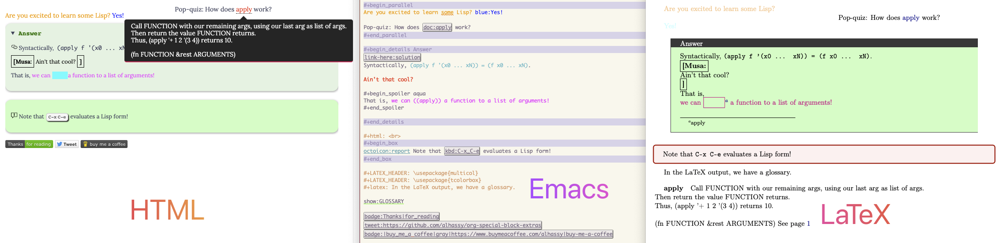
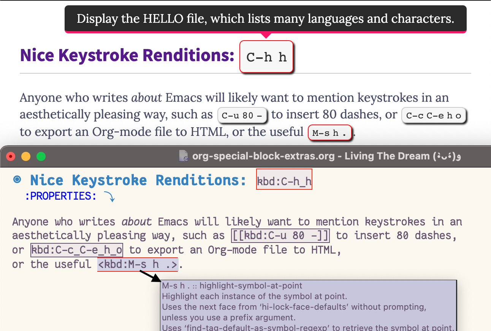
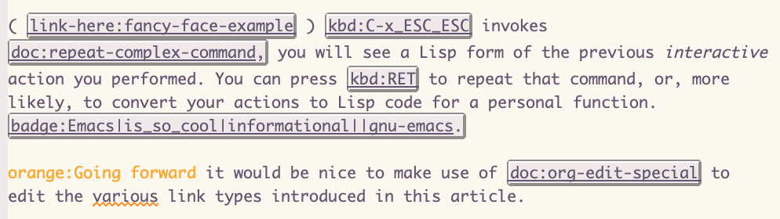
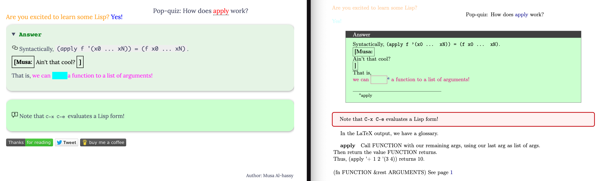
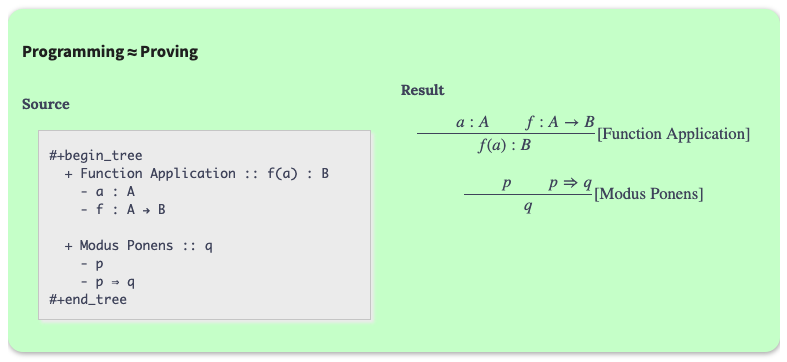
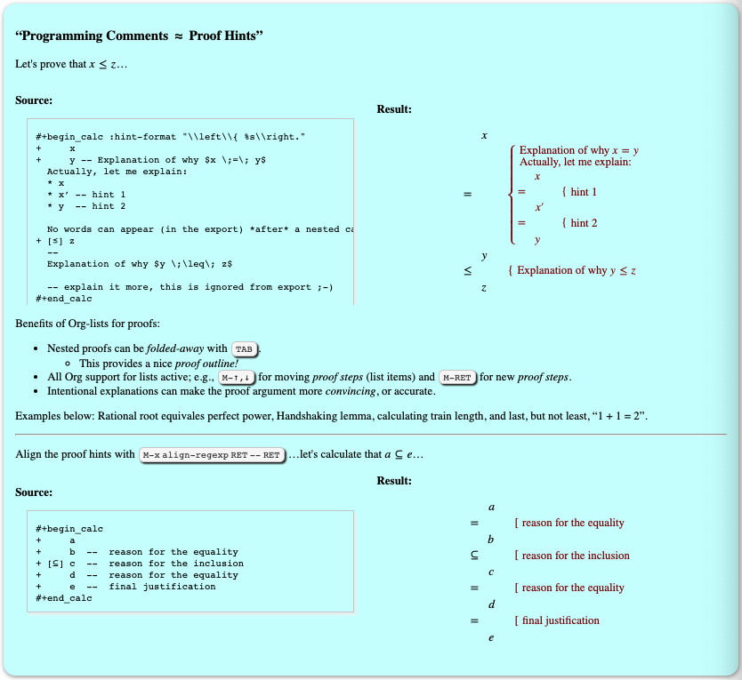
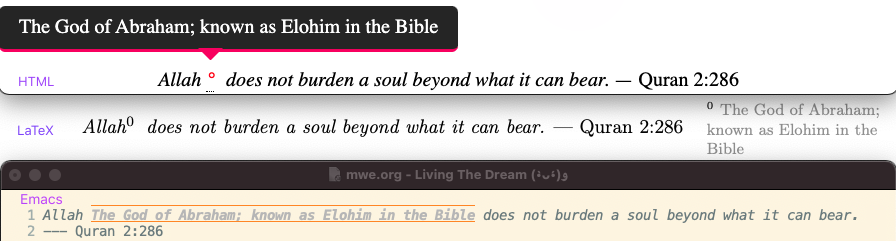

org-special-block-extras
A unified interface for special blocks and links: defblock

Abstract
The aim is to write something once using Org-mode markup then generate the markup for multiple backends. That is, write once, generate many!
In particular, we are concerned with ‘custom’, or ‘special’, blocks which delimit how a particular region of text is supposed to be formatted according to the possible export backends. In some sense, special blocks are meta-blocks. Rather than writing text in, say, LaTeX environments using LaTeX commands or in HTML
div's using HTML tags, we promote using Org-mode markup in special blocks —Org markup cannot be used explicitly within HTML or LaTeX environments.Special blocks, like
centreandquote, allow us to use Org-mode as the primary interface regardless of whether the final result is an HTML or PDF article; sometime we need to make our own special blocks to avoid a duplication of effort. However, this can be difficult and may require familiarity with relatively advanced ELisp concepts, such as macros and hooks; as such, users may not be willing to put in the time and instead use ad-hoc solutions.We present a new macro, defblock, which is similar in-spirit to Lisp's standard defun except that where the latter defines functions, ours defines new special blocks for Emacs' Org-mode —as well as, simultaneously, defining new Org link types. Besides the macro, the primary contribution of this effort is an interface for special blocks that admits arguments and is familar to Org users —namely, we ‘try to reuse’ the familiar
src-block interface, including header-args, but for special blocks.It is hoped that the ease of creating custom special blocks will be a gateway for many Emacs users to start using Lisp.
A 5-page PDF covering ELisp fundamentals can be found here.
This article is featured in EmacsConf2020, with slides here: No pictures, instead we use this system to make the slides have a variety of styling information; i.e., we write Org and the result looks nice. “Look ma, no HTML required!”

Figure 1: Write in Emacs using Org-mode, export beautifully to HTML or LaTeX
Super Simple Intro to Emacs’ Org-mode
Emacs’ Org-mode is an outliner, a rich markup language, spreadsheet tool, literate programming system, and so much more. It is an impressive reason to use Emacs (•̀ᴗ•́)و
Org-mode syntax is very natural; e.g., the following is Org-mode!
+ Numbered and bulleted lists are as expected.
- Do the things:
1. This first
2. This second
44. [@44] This forty-fourth
- =[@𝓃]= at the beginning of an iterm forces
list numbering to start at 𝓃
- =[ ]= or =[X]= at the beginning for checkbox lists
- Use =Alt ↑, ↓= to move items up and down lists;
renumbering happens automatically.
+ Definitions lists:
~- term :: def~
+ Use a comment, such as =# separator=, between two lists
to communicate that these are two lists that /happen/ to be
one after the other. Or use any /non-indented/ text to split
a list into two.
* My top heading, section
words
** Child heading, subsection
more words
*** Grandchild heading, subsubsection
even more!
Export In Emacs, press C-c C-e h o to obtain an HTML webpage ---like this one!— of the Org-mode markup; use C-c C-e l o to obtain a PDF rendition.
You can try Org-mode notation and see how it renders live at: http://mooz.github.io/org-js/
You make a heading by writing * heading at the start of a line, then you can
TAB to fold/unfold its contents. A table of contents, figures, tables can be
requested as follows:
# figures not implemented in the HTML backend # The 𝓃 is optional and denotes headline depth #+toc: headlines 𝓃 #+toc: figures #+toc: tables
Markup elements can be nested.
Syntax Result /Emphasise/, italicsEmphasise *Strong*, boldStrong */very strongly/*, bold italicsvery strongly =verbatim=, monospaced typewriterverbatim+deleted+deleted_inserted_inserted super^{script}edsuperscripted sub_{scripted}edsubscripteded - Markup can span across multiple lines, by default no more than 2.
- In general, markup cannot be ‘in the middle’ of a word.
- New lines demarcate paragraphs
- Use
\\to force line breaks without starting a new paragraph - Use at least 5 dashes,
-----, to form a horizontal rule
provides support for numerous other kinds of markup elements, such as
red:hello
which becomes “ hello ”.
Working with tables
#+ATTR_HTML: :width 100% #+name: my-tbl #+caption: Example table | Who? | What? | |------+-------| | me | Emacs | | you | Org |
Note the horizontal rule makes a header row and is formed by typing | - then pressing TAB . You can TAB between cells.
Working with links
Link syntax is [[source url][description]]; e.g., we can refer to the above
table with [[my-tbl][woah]].
Likewise for images: file:path-to-image.
Mathematics
Source
\[ \sin^2 x + \cos^2 x = \int_\pi^{\pi + 1} 1 dx = {3 \over 3} \]
Result
\[ \sin^2 x + \cos^2 x = \int_\pi^{\pi + 1} 1 dx = {3 \over 3} \]
- Instead of
\[...\], which displays a formula on its own line, centred, use$...$to show a formula inline. - Captioned equations are numbered and can be referenced via links, as shown below.
Source
#+name: euler
\begin{equation}
e ^ {i \pi} + 1 = 0
\end{equation}
See equation [[euler]].
Result
\begin{equation} \label{org20e8d15} e ^ {i \pi} + 1 = 0 \end{equation}See equation \eqref{org20e8d15}.
Source code
Source
#+BEGIN_SRC C -n
int tot = 1; (ref:start)
for (int i = 0; i != 10; i++) (ref:loop)
tot *= i; (ref:next)
printf("The factorial of 10 is %d", tot);
#+END_SRC
Result
1: int tot = 1; (start) 2: for (int i = 0; i != 10; i++) (loop) 3: tot *= i; (next) 4: printf("The factorial of 10 is %d", tot);
The labels (ref:name) refer to the lines in the source code and can be
referenced with link syntax: [[(name)]]. Hovering over the link, in the HTML
export, will dynamically highlight the corresponding line of code. To strip-out
the labels from the displayed block, use -r -n in the header so it becomes
#+begin_src C -r -n, now the references become line numbers.
Another reason to use Org:
If you use :results raw, you obtain dynamic templates that may use Org-markup:
Source
#+BEGIN_SRC C
printf("*bold* +%d+ (strikethrough) /slanted/", 12345);
#+END_SRC
♯+RESULTS:
*bold* +12345+ (strikethrough) /slanted/
Result
printf("*bold* +%d+ (strikethrough) /slanted/", 12345);
♯+RESULTS:
bold 12345 (strikethrough) slanted
The #+RESULTS: is obtained by pressing C-c C-c on the src block, to execute
it and obtain its result.
Also: Notice that a C program can be run without a main ;-)
That is, we can write code in between prose that is intended to be read like an essay:

⇒ A brief reference of Emacs keybindings; 2 pages
⇒ A compact Emacs Lisp Reference; 7 pages
Single source of truth: This mini-tutorial can be included into other Org files by declaring
#+include: ~/.emacs.d/init.org::#Mini-tutorial-on-Org-mode |
For more, see https://orgmode.org/features.html.
Table of Contents
- 1. A unified interface for special blocks and links:
defblock - 2. Editor Comments
- 3. Folded Details —As well as boxed text and subtle colours
- 4. Parallel
- 5. Colours
- 6. Nice Keystroke Renditions: kbd:C-h_h
- 7. “Link Here!” & OctoIcons
- 8. Badge Links
- 9. Tooltips for Glossaries, Dictionaries, and Documentation
- 10. Marginal, “one-off”, remarks
- 11. Equational Proofs
- 12. Emacs faces for links
- 13. Summary
The full article may be read as a PDF or as HTML —or visit the repo. Installation instructions are below.
1 A unified interface for special blocks and links: defblock
An Org-mode block of type 𝒳 is a bunch of text enclosed in #+begin_𝒳 and
#+end_𝒳, upon export it modifies the text —e.g., to center it, or to display
it as code. We show how to make new blocks using a simple interface
---defblock— that lets users treat 𝒳 as a string-valued function in the style
of defun.
The notable features of the system are as follows.
- Familiar
defunsyntax for making block ---defblock - Familiar
srcsyntax for passing arguments —e.g.,:key value - Modular: New blocks can be made out of existing blocks really quickly using
blockcall—similar to Lisp'sfuncall.
EmacsConf 2020 Abstract
Users will generally only make use of a few predefined special blocks, such as
example, centre, quote, and will not bother with the effort required to make new
ones. When new encapsulating notions are required, users will either fallback on
HTML or LaTeX specific solutions, usually littered with #+ATTR clauses to pass
around configurations or parameters.
Efforts have been exerted to mitigate the trouble of producing new special blocks. However, the issue of passing parameters is still handled in a clumsy fashion; e.g., by having parameters be expressed in a special block's content using specific keywords.
We present a novel approach to making special blocks in a familiar fashion and
their use also in a familiar fashion. We achieve the former by presenting
defblock, an anaphoric macro exceedingly similar to defun, and for the latter we
mimic the usual src-block syntax for argument passing to support special blocks.
For instance, here is a sample declaration.
(defblock stutter () (reps 2) "Output the CONTENTS of the block REPS many times" (org-parse (s-repeat reps contents)))
Here is an invocation that passes an optional argument; which defaults to 2 when not given.
#+begin_stutter 5 Emacs for the win :-) #+end_stutter 5
Upon export, to HTML or LaTeX for instance, the contents of this block are
repeated (stuttered) 5 times. The use of src-like invocation may lead to a
decrease in #+ATTR clauses.
In the presentation, we aim to show a few practical special blocks that users may want: A block that …
- translates some selected text —useful for multilingual blogs
- hides some selected text —useful for learning, quizzes
- folds/boxes text —useful in blogs for folding away details
In particular, all of these examples will be around ~5 lines long!
We also have a larger collection of more useful block types, already implemented.
The notable features of the system are as follows.
- Familiar
defunsyntax for making block ---defblock - Familiar
srcsyntax for passing arguments —e.g.,:key value - Fine-grained control over export translation phases —c.f.,
org-parseabove - Modular: New blocks can be made out of existing blocks really quickly using
blockcall—similar to Lisp'sfuncall. We will show how to fuse two blocks to make a new one, also within ~5 lines.
It is hoped that the ease of creating custom special blocks will be a gateway for many Emacs users to start using Lisp.
1.1 What is a special block?
An Org mode block is a region of text surrounded by #+BEGIN_𝒳 … #+END_𝒳; they
serve various purposes as summarised in the table below. However, we shall
use such blocks to execute arbitrary code on their contents.
| 𝒳 | Description |
|---|---|
example |
Format text verbatim, leaving markup as is |
src |
Format source code |
center |
Centre text |
quote |
Format text as a quotation —ignore line breaks |
verse |
Every line is appended with a line break |
tiny |
Render text in a small font; likewise footnotesize |
comment |
Completely omit the text from export |
- They can be folded and unfolded in Emacs by pressing TAB in the
#+BEGINline. - The contents of blocks can be highlighted as if they were of language ℒ such
as
org, html, latex, haskell, lisp, python, …by writing#+BEGIN_𝒳 ℒon the starting line, where𝒳is the name of the block type. - Verbatim environments
srcandexamplemay be followed by switch-nto display line numbers for their contents.
I use snippets in my init to quickly insert special blocks (•̀ᴗ•́)و
You can ‘zoom in temporarily’, narrowing your focus to only on a particular
block, with org-narrow-to-element, C-x n e, to make your window only show
the block. Then use C-x n w to widen your vision of the buffer's contents.
Warning! Special blocks of the same kind do not nest!
By their very nature, special blocks of the same name cannot be nested —e.g.,
try to put one quote block within another and see what (does not) happen.
Moreover, special blocks cannot contain unicode in their names and no
underscore, ‘_’, in their names; e.g., a special block named quote₀ will
actually refer to quote.
Our goal is to turn Org blocks into LaTeX environments and HTML divs.
Why not use LaTeX or HTML environments directly?
- Can no longer use Org markup in such settings.
- Committed to one specific export type.
[Aside:
The export syntax @@backend: 𝒳@@ inserts text 𝒳 literally as-is precisely when
the current backend being exported to is backend. This is useful for inserting
html snippets or latex commands. We can use @@comment: 𝒳@@ to mimic inline
comments ;-) —Since there is [hopefully] no backend named comment.
In general, a “special block” such as
#+begin_𝒳 I /love/ Emacs! #+end_𝒳
Exports to LaTeX as:
\begin{𝒳} I \emph{love} Emacs! \end{𝒳}
Exports to HTML as:
<div class="𝒳"> I <em>love</em> Emacs! </div>
Notice that the standard org markup is also translated according to the export type.
If the 𝒳 environment exists in a backend —e.g., by some \usepackage{⋯} or
manually with
\newenvironment{𝒳}{⋯}{⋯} in LaTeX— then the file will compile
without error. Otherwise, you need to ensure it exists —e.g., by defining the
backend formatting manually yourself.
[Aside:
LaTeX packages that a user needs consistently are declared in the
list org-latex-packages-alist. See its documentation, with C-h o,
to learn more. To export to your own LaTeX classes, C-h o org-latex-classes.
What is an HTML ‘div’?
A div tag defines a division or a section in an HTML document that is styled in
a particular fashion or has JavaScript code applied to it. For example
—placing the following in an #+begin_export html ⋯ #+end_export— results in
a section of text that is editable by the user —i.e., one can just alter text
in-place— and its foreground colour is red, while its background colour is
light blue, and it has an uninformative tooltip.
Source
<div contenteditable="true" title="woah, a tool tip!" style="color:red; background-color:lightblue"> This is some editable text! Click me & type! </div>
Result
What is a CSS ‘class’?
To use a collection of style settings repeatedly, we may declare them in a class
—which is just an alias for the ;-separated list of attribute:value
pairs. Then our div's refer to that particular class name.
For example, in an HTML export block, we may declare the following style class
named red.
#+begin_export html
<style>
.red { color:red; }
</style>
#+end_export
Now, the above syntax with 𝒳 replaced by red works as desired in HTML export:
HTML now knows of a class named red.
For instance, now this
#+begin_red
I /love/ Emacs!
#+end_red
Results in:
I love Emacs!
This approach, however, will not work if we want to produce LaTeX and so requires a duplication of efforts. We would need to declare such formatting once for each backend.
1.2 How do I make a new link type?
Sometimes using a block is too verbose and it'd be better to ‘inline’ it; for this, we use Org's link mechanism.
Use (org-link-set-parameters params) to add a
new link type —an older obsolete method is org-add-link-type. The list of all
supported link types is org-link-parameters; its documentation identifies the
possibilities for params.
Let's produce an example link type, then discuss its code.
Intended usage:
Raw use salam and descriptive, using ‘example’ link type ^_^

1: (org-link-set-parameters 2: ;; The name of the new link type, usage: “example:label” 3: "example" 4: 5: ;; When you click on such links, “let me google that for you” happens 6: :follow (lambda (label) (browse-url (concat "https://lmgtfy.com/?q=" label))) 7: 8: ;; Upon export, make it a “let me google that for you” link 9: :export (lambda (label description backend) 10: (format (pcase backend 11: ('html "<a href=\"%s\">%s</a>") 12: ('latex "\\href{%s}{%s}") 13: (_ "I don’t know how to export that!")) 14: (concat "https://lmgtfy.com/?q=" label) 15: (or description label))) 16: 17: ;; These links should *never* be folded in descriptive display; 18: ;; i.e., “[[example:lable][description]]” will always appear verbatim 19: ;; and not hide the first pair […]. 20: ;; :display 'full 21: 22: ;; The tooltip alongside a link 23: :help-echo (lambda (window object position) 24: (save-excursion 25: (goto-char position) 26: (-let* (((&plist :path :format :raw-link :contents-begin :contents-end) 27: (cadr (org-element-context))) 28: ;; (org-element-property :path (org-element-context)) 29: (description 30: (when (equal format 'bracket) 31: (copy-region-as-kill contents-begin contents-end) 32: (substring-no-properties (car kill-ring))))) 33: (format "“%s” :: Let me google “%s” for you -__- %s and %s" 34: raw-link (or description raw-link))))) 35: 36: ;; How should these links be displayed 37: :face '(:foreground "red" :weight bold 38: :underline "orange" :overline "orange") 39: 40: ;; Any special keybindings when cursour is on this link type? 41: ;; On ‘example:’ links, C-n/p to go to the next/previous such links. 42: :keymap (let ((map (copy-keymap org-mouse-map))) 43: ;; Populate the keymap 44: (define-key map (kbd "C-p") 45: (lambda () (interactive) (re-search-backward "example:" nil t))) 46: (define-key map (kbd "C-n") 47: (lambda () (interactive) (re-search-forward "example:" nil t))) 48: ;; Return the keymap 49: map))
- Line 3
"example" Add a new
examplelink type.- If the type already exists, update it with the given arguments.
The syntax for a raw link is
example:pathand for the bracketed descriptive form[[example:path][description]].- Some of my intended uses for links including colouring text and doing nothing else, as such the terminology ‘path’ is not sufficiently generic and so I use the designation ‘label’ instead.
- Line 6
:follow What should happen when a user clicks on such links?
This is a function taking the link path as the single argument and does whatever is necessary to “follow the link”, for example find a file or display a message. In our case, we open the user's browser and go to a particular URL.
- Line 9
:export How should this link type be exported to HTML, LaTeX, etc?
This is a three-argument function that formats the link according to the given backend, the resulting string value os placed literally into the exported file. Its arguments are:
label⇒ the path of the link, the text after the link type prefixdescription⇒ the description of the link, if anybackend⇒ the export format, a symbol likehtmlorlatexorascii.
In our example above, we return different values depending on the
backendvalue.- If
:exportis not provided, default Org-link exportation happens.
- Line 20
:display - Should links be prettily folded away when a description is provided?
- Line 23
:help-echo What should happen when the user's mouse is over the link?
This is either a string or a string-valued function that takes the current window, the current buffer object, and its position in the current window.
In our example link, we go to the position of the object, destructure the Org link's properties using
-let, find the description of the link, if any, then provide a string based on the link's path and description.The general textual property ‘help-echo’
We may use
help-echoto attach tooltips to arbitrary text in a file, as follows. I have found this to be useful in metaprogramming to have elaborated, generated, code shown as a tooltip attached to its named specification.;; Nearly instantaneous display of tooltips. (setq tooltip-delay 0) ;; Give user 30 seconds before tooltip automatically disappears. (setq tooltip-hide-delay 300) (defun tooltipify (phrase notification &optional underline) "Add a tooltip to every instance of PHRASE to show NOTIFICATION. We only add tooltips to PHRASE as a standalone word, not as a subword. If UNDERLINE is provided, we underline the given PHRASE so as to provide a visual clue that it has a tooltip attched to it. The PHRASE is taken literally; no regexp operators are recognised." (assert (stringp phrase)) (assert (stringp notification)) (save-excursion ;; Return cursour to current-point afterwards. (goto-char 1) ;; The \b are for empty-string at the start or end of a word. (while (search-forward-regexp (format "\\b%s\\b" (regexp-quote phrase)) (point-max) t) ;; (add-text-properties x y ps) ;; ⇒ Override properties ps for all text between x and y. (add-text-properties (match-beginning 0) (match-end 0) (list 'help-echo (s-trim notification))))) ;; Example use (tooltipify "Line" "A sequential formatation of entities or the trace of a particle in linear motion")
We will use the tooltip documentation later on ^_^
Useful info on tooltips:
- Changing text properties —GNU
- Tooltips on text in Emacs —Kitchin
- Getting graphical feedback as tooltips in Emacs —Kitchin
- Defining new tooltips in Emacs —Stackoverflow
- Line 37
:face What textual properties do these links possess?
This is either a face or a face-valued function that takes the current link's path label as the only argument. That is, we could change the face according to the link's label —which is what we will do for the
colorlink type as in[[color:brown][hello]]will be rendered in brown text.- If
:faceis not provided, the default underlined blue face for Org links is used. - Learn more about faces!
- If
- More
- See
org-link-parametersfor documentation on more parameters.
1.3 The Core Utility: defblock and friends
To have a unified, and pleasant, interface for declaring new blocks and links, we take the following approach:
- ( Fuse the process of link generation and special block support into one macro, defblock which is like defun. )
The user writes as string-valued function named 𝒳, possibly with arguments, that has access to a
contentsandbackendvariables.‘defblock’ Implementation
(defvar o--supported-blocks nil "Which special blocks, defined with DEFBLOCK, are supported.") (cl-defmacro o-defblock (name main-arg kwds &rest experimental&&docstring&&body) "Declare a new special block, and link, in the style of DEFUN. A full featured example is at the end of this documentation string. This is an anaphoric macro that provides export support for special blocks *and* links named NAME. Just as an Org-mode src-block consumes as main argument the language for the src block, our special blocks too consume a MAIN-ARG; it may be a symbol or a cons-list consisting of a symbolic name (with which to refer to the main argument in the definition of the block) followed by a default value, then, optionally, any information for a one-time setup of the associated link type. The main arg may be a sequence of symbols separated by spaces, and a few punctuation with the exception of comma ‘,’ since it is a special Lisp operator. In doubt, enclose the main arg in quotes. Then, just as Org-mode src blocks consume key-value pairs, our special blocks consume a number of KWDS, which is a list of the form (key₀ value₀ … keyₙ valueₙ). After that is an optional DOCSTRING, a familar feature of DEFUN. The docstring is displayed as part of the tooltip for the produced link type. Finally, the BODY is a (sequence of) Lisp forms ---no progn needed--- that may refer to the names BACKEND and CONTENTS which refer to the current export backend and the contents of the special block ---or the description clause of a link. CONTENTS refers to an Org-mode parsed string; i.e., Org-markup is acknowledged. In, hopefully, rare circumstances, one may refer to RAW-CONTENTS to look at the fully unparsed contents. Finally, this macro exposes two functions: + ORG-EXPORT: Wrap the argument in an export block for the current backend. + ORG-PARSE: This should ONLY be called within an ORG-EXPORT call, to escape text to Org, and out of the export block. ---------------------------------------------------------------------- TLDR for EXPERIMENTAL&&DOCSTRING&&BODY, the first two parts are optional; they're a symbol, a string, then the main body. The symbol, OSPE-RESPECT-NEWLINES?, when present enables a highly experimental [i.e., do *not* use it!] feature: No new lines for blocks in HTML export. Its need rose from developing the MARGIN block type. ---------------------------------------------------------------------- The relationship between links and special blocks: [ [type:label][description]] ≈ #+begin_type label description #+end_type ---------------------------------------------------------------------- Example declaration, with all possible features shown: ;; We can use variable values when defining new blocks (setq angry-red '(:foreground \"red\" :weight bold)) (defblock remark (editor \"Editor Remark\" :face angry-red) (color \"red\" signoff \"\") \"Top level (HTML & LaTeX)OSPE-RESPECT-NEWLINES? editorial remarks; in Emacs they're angry red.\" (format (if (equal backend 'html) \"<strong style=\\\"color: %s;\\\">⟦%s: %s%s⟧</strong>\" \"{\\color{%s}\\bfseries %s: %s%s}\") color editor contents signoff)) ;; I don't want to change the definition, but I'd like to have ;; the following as personalised defaults for the “remark” block. ;; OR, I'd like to set this for links, which do not have argument options. (defblock-header-args remark :main-arg \"Jasim Jameson\" :signoff \"( Aim for success! )\") Three example uses: ;; ⟨0⟩ As a special blocks with arguments given. #+begin_remark Bobbert Barakallah :signoff \"Thank-you for pointing this out!\" :color green I was trying to explain that ${\large (n × (n + 1) \over 2}$ is always an integer. #+end_remark ;; ⟨1⟩ As a terse link, using default values for the args. ;; Notice that Org-mode formatting is recoqgnised even in links. [ [remark:Jasim Jameson][Why are you taking about “$\mathsf{even}$” here?]] ;; ⟨2⟩ So terse that no editor name is provided. [ [remark:][Please improve your transition sentences.]] ;; ⟨★⟩ Unlike 0, examples 1 and 2 will have the default SIGNOFF ;; catenated as well as the default red color. " ;; ⇨ The special block support ;; (add-to-list 'o--supported-blocks name) ;; global var ;; Identify which of the optional features is present... (let (ospe-respect-newlines? docstring body) (if (symbolp (cl-first experimental&&docstring&&body)) ;; okay we have a newline declaration, but do we ALSO have a doc-string? (if (stringp (cl-second experimental&&docstring&&body)) (setq ospe-respect-newlines? t docstring (cl-second experimental&&docstring&&body) body (cddr experimental&&docstring&&body)) (setq ospe-respect-newlines? t body (cl-rest experimental&&docstring&&body))) ;; no newline declaration... ;; maybe we have a docstring? (if (stringp (cl-first experimental&&docstring&&body)) (setq docstring (cl-first experimental&&docstring&&body) body (cl-rest experimental&&docstring&&body)) ;; else neither newline-declaration now docstring (setq body experimental&&docstring&&body))) `(progn ;; Produce an associated Lisp function ,(o-defblock---support-block-type name docstring (if (consp `,main-arg) (car main-arg) 'main-arg) ;; main argument's name (cadr main-arg) ;; main argument's value kwds body ;; MA: I'd like it to be always ‘true’, but it's experimental and breaks so much stuff. ospe-respect-newlines? ) ;; ⇨ The link type support ;; The ‘main-arg’ may contain a special key ‘:link-type’ whose contents ;; are dumped here verbatim. ;; ‘(main-arg-name main-arg-val :face … :follow …)’ ,(o-defblock---support-link-type name (cddr main-arg) docstring)))) ;;;;;;;;;;;;;;;;;;;;;;;;;;;;;;;;;;;;;;;;;;;;;;;;;;;;;;;;;;;;;;;;;;;;;;;;;;;;;;;; ;; WHERE ... ;;;;;;;;;;;;;;;;;;;;;;;;;;;;;;;;;;;;;;;;;;;;;;;;;;;;;;;;;;;;;;;;;;;;;;;;;;;;;;;; (cl-defmethod o-defblock---support-block-type (name docstring main-arg-name main-arg-value kwds body ospe-respect-newlines?) "Helper method for o-defblock. This method creates an Org block type's associated Lisp function. NAME, string: The name of the block type. DOCSTRING, string: Documentation of block. MAIN-ARG-NAME: Essentially main-arg's name MAIN-ARG-VALUE: Essentially main-arg's value KWDS, plist: Keyword-value pairs BODY, list: Code to be executed" `(cl-defun ,(intern (format "o--%s" name)) (backend raw-contents &optional ;; ,(car main-arg) ,main-arg-name &rest _ &key (ospe-link? nil) ,@(-partition 2 kwds)) ,docstring ;; Use default for main argument (when (and ',main-arg-name (s-blank-p ,main-arg-name)) (--if-let (plist-get (cdr (assoc ',name o--header-args)) :main-arg) (setq ,main-arg-name it) (setq ,main-arg-name ,main-arg-value))) (cl-letf (((symbol-function 'org-export) (lambda (x) "Wrap the given X in an export block for the current backend. One can think of this function as replacing the #+begin_𝒳⋯#+end_𝒳 in-place in your Org document; but really that's done by the ⋯-support-blocks function. " (if ospe-link? x ;; ospe-respect-newlines? is super experimental: It's a bit ugly on the LaTeX side. (cond ((and ,ospe-respect-newlines? (member backend '(html reveal))) (format "@@%s:%s@@" backend (s-replace "\n" (format "@@\n@@%s:" backend) x) backend)) (:else (format "#+begin_export %s \n%s\n#+end_export" backend x)))))) ((symbol-function 'org-parse) (lambda (x) "This should ONLY be called within an ORG-EXPORT call." (if ospe-link? x (cond ((and ,ospe-respect-newlines? (member backend '(html reveal))) (format "@@%s@@%s:" x backend)) (:else (format "\n#+end_export\n%s\n#+begin_export %s\n" x backend))))))) ;; Use any headers for this block type, if no local value is passed ,@(cl-loop for k in (mapcar #'car (-partition 2 kwds)) collect `(--when-let (plist-get (cdr (assoc ',name o--header-args)) ,(intern (format ":%s" k))) (when (s-blank-p ,k) (setq ,k it)))) (org-export (let ((contents (org-parse raw-contents))) ,@body))))) (cl-defmethod o-defblock---support-link-type (name verbatim tooltip) "Helper method for o-defblock. This method creates an Org link type. NAME, string: The name of the link type. VERBATIM, list: Code dumped into the org-link-set-parameters. TOOLTIP, string: Tooltip text alongside link, for use in Emacs." `(org-link-set-parameters ,(format "%s" name) ,@verbatim :export (lambda (label description backend) ; s-replace-all `(("#+end_export" . "") (,(format "#+begin_export %s" backend) . "")) (s-replace-all `(("@@" . "")) ; (,(format "@@%s:" backend) . "") (,(intern (format "o--%s" name)) backend (or description label) label :ospe-link? t))) ;; The tooltip alongside a link :help-echo (lambda (window object position) (save-excursion (goto-char position) (-let* (((&plist :path :format :raw-link :contents-begin :contents-end) (cadr (org-element-context))) (description (when (equal format 'bracket) (copy-region-as-kill contents-begin contents-end) (substring-no-properties (car kill-ring))))) (format "%s\n\n%s" raw-link ,tooltip))))))
Going forward, it would be nice to have a set of switches that apply to all
special blocks. For instance, :ignore to simply bypass the user-defined
behaviour of a block type, and :noexport to zero-out a block upon export. These
are super easy to do —just need a few minutes to breath. It may also be
desirable to provide support for drawers —just as we did to ‘fuse’ the
block-type and link-type approaches used here into one macro.
We tell Org to please look at all special blocks
#+begin_𝒳 main-arg :key₀ value₀ … :keyₙ valueₙ contents #+end_𝒳
Then, before export happens, to replace all such blocks with the result of calling the user's 𝒳 function; i.e., replace them by, essentially,
(𝒳 main-arg :key₀ value₀ … :keyₙ valueₙ)
Implementing the hooking mechanism
The mechanism that rewrites your source…
(defun o--pp-list (xs) "Given XS as (x₁ x₂ … xₙ), yield the string “x₁ x₂ … xₙ”, no parens. When n = 0, yield the empty string “”." (s-chop-suffix ")" (s-chop-prefix "(" (format "%s" (or xs ""))))) (defvar o--current-backend nil "A message-passing channel updated by o--support-special-blocks-with-args and used by DEFBLOCK.") (defun o--support-special-blocks-with-args (backend) "Remove all headlines in the current buffer. BACKEND is the export back-end being used, as a symbol." (setq o--current-backend backend) (let (blk-start ;; The point at which the user's block begins. header-start ;; The point at which the user's block header & args begin. kwdargs ;; The actual key-value arguments for the header. main-arg ;; The first (non-keyed) value to the block. blk-column ;; The column at which the user's block begins. body-start ;; The starting line of the user's block. blk-contents ;; The actual body string. ;; ⟨blk-start/column⟩#+begin_⟨header-start⟩blk main-arg :key₀ val ₀ … :keyₙ valₙ ;; ⟵ ⟨kwdargs⟩ ;; ⟨body-start⟩ body ;; #+end_blk ) (cl-loop for blk in o--supported-blocks do (goto-char (point-min)) (while (ignore-errors (re-search-forward (format "^\s*\\#\\+begin_%s" blk))) ;; MA: HACK: Instead of a space, it should be any non-whitespace, optionally; ;; otherwise it may accidentlly rewrite blocks with one being a prefix of the other! (setq header-start (point)) ;; Save indentation (re-search-backward (format "\\#\\+begin_%s" blk)) (setq blk-start (point)) (setq blk-column (current-column)) ;; actually process body (goto-char header-start) (setq body-start (1+ (line-end-position))) (thread-last (buffer-substring-no-properties header-start (line-end-position)) (format "(%s)") read (--split-with (not (keywordp it))) (setq kwdargs)) (setq main-arg (o--pp-list (car kwdargs))) (setq kwdargs (cadr kwdargs)) (forward-line -1) (re-search-forward (format "^\s*\\#\\+end_%s" blk)) (setq blk-contents (buffer-substring-no-properties body-start (line-beginning-position))) (kill-region blk-start (point)) (insert (eval `(,(intern (format "o--%s" blk)) (quote ,backend) ,blk-contents ,main-arg ,@(--map (list 'quote it) kwdargs)))) ;; See: https://github.com/alhassy/org-special-block-extras/issues/8 ;; (indent-region blk-start (point) blk-column) ;; Actually, this may be needed... ;; (indent-line-to blk-column) ;; #+end... ;; (goto-char blk-start) (indent-line-to blk-column) ;; #+begin... ;; the --map is so that arguments may be passed ;; as "this" or just ‘this’ (raw symbols) ))))
Let's have some sanity tests…
(deftest "pp-list works as desired" (should (equal "1 2 3 4 5" (o--pp-list '(1 2 3 4 5)))) (should (equal "1" (o--pp-list '(1)))) (should (equal "" (o--pp-list nil)))) ;; Using propcheck, we run this test on /arbitrary/ buffer contents. (deftest "No supported blocks means buffer is unchanged" :tags '(core) (let* (o--supported-blocks (propcheck-seed (propcheck-seed)) (buf (propcheck-generate-string nil))) (should (equal buf (with-temp-buffer (insert buf) (o--support-special-blocks-with-args 'html) (buffer-string)))))) (deftest "Constant blocks preserve indentation/enumeration" :expected-result :failed :tags '(core) (defblock go nil nil "doc" "hello") ;; Constantly “hello” (should (equal " 1. item one 2. item two #+begin_export html hello #+end_export 3. item three" (with-temp-buffer (insert " 1. item one 2. item two #+begin_go world #+end_go 3. item three") (o--support-special-blocks-with-args 'html) (buffer-string))))) (deftest "Constant blocks export to LaTex preserves indentation/enumeration" (should (equal "\\begin{enumerate} \\item item one \\item item two hello \\item item three \\end{enumerate} " (org-export-string-as " 1. item one 2. item two #+begin_go world #+end_go 3. item three" 'latex :body-only-please)))) (deftest "Constant blocks export to HTML preserves indentation/enumeration" (should (equal "<ol class=\"org-ol\"> <li>item one</li> <li><p> item two </p> hello</li> <li>item three</li> </ol> " (org-export-string-as " 1. item one 2. item two #+begin_go world #+end_go 3. item three" 'html :body-only-please)))) (deftest "Identity blocks preserve indentation/enumeration" :expected-result :failed :tags '(core) (defblock id nil nil "doc" contents) (should (equal " 1. item one 2. item two #+begin_export html #+end_export world #+begin_export html #+end_export 3. item three" (with-temp-buffer (insert " 1. item one 2. item two #+begin_id world #+end_id 3. item three") (o--support-special-blocks-with-args 'html) (buffer-string))))) (deftest "Identity blocks export to LaTex preserves indentation/enumeration" :expected-result :failed (defblock id nil nil "doc" contents) (should (equal "\\begin{enumerate} \\item item one \\item item two world \\item item three \\end{enumerate} " (org-export-string-as " 1. item one 2. item two #+begin_id world #+end_id 3. item three" 'latex :body-only-please)))) (deftest "Identity blocks export to HTML preserves indentation/enumeration" :expected-result :failed (defblock id nil nil "doc" contents) (should (equal "<ol class=\"org-ol\"> <li>item one</li> <li><p> item two </p> <p> world </p></li> <li>item three</li> </ol> " (org-export-string-as " 1. item one 2. item two #+begin_id world #+end_id 3. item three" 'html :body-only-please))))
When you enable the org-special-block-extras mode, it is activated…
;; https://orgmode.org/manual/Advanced-Export-Configuration.html (add-hook 'org-export-before-parsing-hook 'o--support-special-blocks-with-args)
When you disable the org-special-block-extras mode, it is deactivated…
(remove-hook 'org-export-before-parsing-hook 'o--support-special-blocks-with-args)
‘header-args’ Implementation
Then:
(defvar o--header-args nil "Alist (name plist) where “:main-arg” is a special plist key. It serves a similar role to that of Org's src ‘header-args’. See doc of SET-BLOCK-HEADER-ARGS for more information.") (defmacro o-set-block-header-args (blk &rest kvs) "Set default valuts for special block arguments. This is similar to, and inspired by, Org-src block header-args. Example src use: #+PROPERTY: header-args:Language :key value Example block use: (set-block-header-args Block :main-arg mainvalue :key value) A full, working, example can be seen by “C-h o RET defblock”. " `(add-to-list 'o--header-args (list (quote ,blk) ,@kvs))) (defun o-short-names () "Expose shorter names to the user. Namely, o-set-block-header-args ↦ set-block-header-args o-defblock ↦ defblock o-subtle-colors ↦ subtle-colors " (defalias 'defblock 'o-defblock) (defalias 'set-block-header-args 'o-set-block-header-args) (defalias 'thread-blockcall 'o-thread-blockcall) (defalias 'subtle-colors 'o-subtle-colors))
This interface is essentially that of Org's src blocks, with the main-arg
being the first argument to 𝒳 and the only argument not needing to be
preceded by a key name —it is done this way to remain somewhat consistent
with the Org src interface. The user definition of 𝒳 decides on how optional
the arguments actually are.
Perhaps an example will clarify things …
1.3.1 Example: Jasim providing in-place feedback to Bobbert
Suppose we want to devise a simple special block for editors to provide constructive feedback to authors so that the feedback appears as top-level elements of the resulting exported file —instead of comments that may accidentally not be handled by the author.
In order to showcase the multiple bells and whistles of the system, the snippet below is twice as long than it needs to be, but it is still reasonably small and accessible.
;; We can use variable values when defining new blocks (setq angry-red '(:foreground "red" :weight bold)) ;; Enable short names; e.g., ‘defblock’ instead of ‘o-defblock’. (o-short-names) ;; This is our 𝒳, “remark”. ;; As a link, it should be shown angry-red; ;; it takes two arguments: “color” and “signoff” ;; with default values being "red" and "". ;; (Assuming we already called o-short-names. ) (defblock rremark (editor "Editor Remark" :face angry-red) (color "red" signoff "") "Top level (HTML & LaTeX) editorial remarks; in Emacs they're angry red." (format (if (equal backend 'html) "<strong style=\"color: %s;\">⟦%s: %s%s⟧</strong>" "{\\color{%s}\\bfseries %s: %s%s}") color editor contents signoff)) ;; I don't want to change the definition, but I'd like to have ;; the following as personalised defaults for the “remark” block. ;; OR, I'd like to set this for links, which do not have argument options. (set-block-header-args rremark :main-arg "Jasim Jameson" :signoff "( Aim for success! )")
Example use
The sum of the first $n$ natural numbers is $\sum_{i = 0}^n i = {n × (n + 1)
\over 2}$. Note that $n × (n + 1)$ is even.
[[rremark:Jasim Jameson][Why are you taking about “$\mathsf{even}$” here?]]
#+begin_rremark Bobbert Barakallah :signoff "Thank-you for pointing this out!" :color green
I was trying, uh ...
Yeah, to explain that ${\large n × (n + 1) \over 2}$ is always an integer.
#+end_rremark
Hence, we only need to speak about whole numbers.
[[rremark:][Then please improve your transition sentences.]]
Resulting rendition
The sum of the first \(n\) natural numbers is \(\sum_{i = 0}^n i = {n × (n + 1) \over 2}\). Note that \(n × (n + 1)\) is even. Jasim Jameson: Why are you taking about “\(\mathsf{even}\)” here?( Aim for success! )
Bobbert Barakallah:I was trying, uh …
Yeah, to explain that \({\large n × (n + 1) \over 2}\) is always an integer.
Thank-you for pointing this out!Hence, we only need to speak about whole numbers. Jasim Jameson: Then please improve your transition sentences.( Aim for success! )
Notice that the result contains text —the signoff message— that the user Jasim did not write explicitly.
… Why the stuttered rremark? Because this package comes with a remark block that
has more bells and whistles … keep reading ;-)
1.4 Modularity with thread-blockcall
Since defblock let's us pretend block —and link— types are string-valued functions, then one would expect that we can compose blocks modularly as functions compose. Somewhat analogously to funcall and thread-last, we provide a macro thread-blockcall.
Example
(thread-blockcall raw-contents
(box name)
(details (upcase name) :title-color "green")
=
#+begin_details NAME :title-color "green"
#+begin_box name
contents
#+end_box
#+end_details
Implementation
First, we need to handle the case of one block…
(cl-defmacro o--blockcall (blk &optional main-arg &rest keyword-args-then-contents) "An anaologue to `funcall` but for blocks. Usage: (blockcall blk-name main-arg even-many:key-values raw-contents) One should rarely use this directly; instead use o-thread-blockcall. " `(concat "#+end_export\n" (,(intern (format "o--%s" blk)) backend ;; defblock internal ; (format "\n#+begin_export html\n\n%s\n#+end_export\n" ,(car (last keyword-args-then-contents))) ;; contents ,@(last keyword-args-then-contents) ;; contents ,main-arg ,@(-drop-last 1 keyword-args-then-contents)) "\n#+begin_export"))
Using the above sequentially does not work due to the plumbing of
defblock, so we handle that plumbing below …
(defmacro o-thread-blockcall (body &rest forms) "Thread text through a number of blocks. BODY is likely to be ‘raw-contents’, possibly with user manipulations. Each FORMS is of the shape “(block-name main-argument :key-value-pairs)” (thread-blockcall x) = x (thread-blockcall x (f a)) = (blockcall f a x) (thread-blockcall x f₁ f₂) ≈ (f₂ (f₁ x)) The third is a ‘≈’, and not ‘=’, because the RHS contains ‘blockcall’s as well as massages the export matter between conseqeuctive blockcalls. A full example: (o-defblock nesting (name) nil \"Show text in a box, within details, which contains a box.\" (o-thread-blockcall raw-contents (box name) (details (upcase name) :title-color \"green\") (box (format \"⇨ %s ⇦\" name) :background-color \"blue\") )) " (if (not forms) body `(-let [result (o--blockcall ,@(car forms) ,body)] ,@(cl-loop for b in (cdr forms) collect `(setq result (o--blockcall ,@b (concat "#+begin_export\n" result "\n#+end_export" )))) result)))
1.4.1 Short Example: An opportunity to learn!
The following tiny block is composed from two details blocks and a box block —defined elsewhere in this article. It is intended to give the reader another opportunity to make sure they have tried to solve the puzzle posed in the main text before seeing the answer -—this works well in HTML, not so in LaTeX.
(o-defblock solution (title "Solution") (reprimand "Did you actually try? Maybe see the ‘hints’ above!" really "Solution, for real") "Show the answers to a problem, but with a reprimand in case no attempt was made." (o-thread-blockcall raw-contents (details really :title-color "red") (box reprimand :background-color "blue") (details title)))
E.g., what is 1 + 1?
Useless Hint: What is a number?
Solution
Did you actually try? Maybe see the ‘hints’ above!
Solution, for real
The answer is 2.
If you're interested in such ‘fundamental’ questions, consider reading Russel and Whitehead's Principa Mathematica ;-)
The above box was created from:
#+begin_solution The answer is 2. If you're interested in such ‘fundamental’ questions, consider reading Russel and Whitehead's /Principa Mathematica/ ;-) #+end_solution
We will make use of this block below when we get to guided problems ;-)
1.4.2 Longer Example: Demonstrating Org-markup with org-demo
Sometimes, we want to show verbatim source and its resulting rendition —which is a major part of this article! So, let's make a block to mitigate such an error-prone tedium.
Implementation
(o-defblock org-demo nil (source "Source" result "Result" source-color "cyan" result-color "cyan" style "parallel" sep (if (equal backend 'html) "@@html:<p><br>@@" "\n\n\n\n") ) "Output the CONTENTS of the block as both parsed Org and unparsed. Label the source text by SOURCE and the result text by RESULT finally, the source-result fragments can be shown in a STYLE that is either “parallel” (default) or “sequential”. SEP is the separator; e.g., a rule ‘<hr>'. " (-let [text (concat ;; Source (thread-last raw-contents (format (if (equal backend 'html) "<div ><pre class=\"src src-org\">%s</pre></div>" "\n\\begin{verbatim}\n%s\n\\end{verbatim}")) org-export (o--blockcall box source :background-color source-color) org-export) ;; Separator sep ;; Result (thread-last raw-contents (o--blockcall box result :background-color result-color) org-export))] (if (equal style "parallel") (o--blockcall parallel "2" :bar nil text) (concat "#+end_export\n" text "\n#+begin_export"))))
Example
This
#+begin_org-demo
/italics/ and _underline_
$e^{i \times \pi} + 1 = 0$
#+end_org-demo
Yields
Source
/italics/ and _underline_
$e^{i \times \pi} + 1 = 0$
Result
italics and underline
\(e^{i \times \pi} + 1 = 0\)
(Sequential) Example
This
#+begin_org-demo :style seq
/italics/ and _underline_
$e^{i \times \pi} + 1 = 0$
#+end_org-demo
Yields
Source
/italics/ and _underline_
$e^{i \times \pi} + 1 = 0$
Result
italics and underline
\(e^{i \times \pi} + 1 = 0\)
However, since our implementation scheme relies on a preprocessing step before
export, we cannot use org-demo to show the results of special blocks: They
disappear in the preprocessing step!
E.g., this
#+begin_org-demo #+begin_box There is no special block ‘box’ to touch! #+end_box #+end_org-demo
yields the mess
Source
#+begin_export htmlThere is no special block ‘box’ to touch!
</pre></div> #+endexport
Result
There is no special block ‘box’ to touch!
However, it does work with links!
Source
[[box:][Box-as-link! Boxception!]]
Result
1.5 Practice Problems: Now you try!
A 5-page PDF covering ELisp fundamentals can be found here.
The first problem is to get you going with Lisp, the next two are actually useful blocks. The rename is useful for when you want to change some names or translate some words; spoiler is useful when we want to test a student's understanding, or to subtly hide the answer to a puzzle so the reader has the opportunity to attempt solving it.
1.5.1 Sttutttterrr
Define a block stutter so that the following examples behave as shown.
Hints
- You need at-most 5 lines of Lisp.
- These functions may be useful: s-repeat, numberp, string-to-number
Examples
The following outputs, well, nothing, since we asked for zero repetitions.
#+begin_stutter 0 words more words #+end_stutter
In contrast …
Source
[[stutter:5][woah, I'm repeated 5 times!]]
Result
woah, I'm repeated 5 times!woah, I'm repeated 5 times!woah, I'm repeated 5 times!woah, I'm repeated 5 times!woah, I'm repeated 5 times!
Solution
Did you actually try? Maybe see the ‘hints’ above!
Solution, for real
(o-defblock stutter (reps 2) nil "Output the CONTENTS of the block REPS many times" (-let [num (if (numberp reps) reps (string-to-number reps))] (s-repeat num contents)))
1.5.2 Textual Substitution —A translation tool
Define a block rename so that the following examples behave as shown.
Hints
- It can be done in less than 10 lines of Lisp.
- First, try to s-replace-all the substitution
'(("Allah" . "God") ("Yacoub". "Jacob") ("Yusuf" . "Joseph"))only. - Then take out such hard-coded substitutions … these functions may be helpful: --map / -map, s-split, s-trim
Examples
#+begin_rename "Allah to God, Yacoub to Jacob, Yusuf to Joseph" Quran 12-4: *_Yusuf_* said to his father ( _*Yacoub*_ ), /“O my father, indeed I have seen (in a dream) eleven stars and the sun and the moon; I saw them prostrating to me.”/ #+end_rename
Yields…
Quran 12-4: Joseph said to his father ( Jacob ), “O my father, indeed I have seen (in a dream) eleven stars and the sun and the moon; I saw them prostrating to me.”
Source
[[rename:Pharaoh to Firaun, Joseph to Yusuf][Genesis 41-17: Pharaoh said unto Joseph, /In my dream, behold, I stood upon the bank of the river/ …]]
Result
Genesis 41-17: Firaun said unto Yusuf, In my dream, behold, I stood upon the bank of the river …
Solution
Did you actually try? Maybe see the ‘hints’ above!
Solution, for real
(o-defblock rename (list "") nil "Perform the given LIST of substitutions on the text. The LIST is a comma separated list of ‘to’ separated symbols. In a link, no quotes are needed." (s-replace-all (--map (cons (car it) (cadr it)) (--map (s-split " to " (s-trim it)) (s-split "," list))) contents))
1.5.3 Spoilers! —“fill in the blanks”
Define a block spoiler so that the following examples behave as shown.
Hints
- It can be done in less than 10 lines of Lisp.
You will need the following style setup …
#+html_head: <style> #+html_head: .spoiler {color: grey; background-color:grey;} #+html_head: .spoiler:hover {color: black; background-color:white;} #+html_head: <style> # Example use: <span class="spoiler"> test </span>- Escape HTML snippets by enclosing them in
@@html: … @@—as discussed above in the introduction to special blocks. - The functions s-replace-regexp and regexp-quote may be useful.
Examples
#+begin_spoiler ((Yusuf)) said to his father ((Yacoub)), /“O my father, indeed I have seen ((eleven stars)) and ((the sun and the moon)); I saw them prostrating to me.”/ #+end_spoiler
Yusuf said to his father Yacoub , “O my father, indeed I have seen eleven stars and the sun and the moon ; I saw them prostrating to me.”
#+begin_spoiler :left "[" :right "]" [Yusuf] said to his father [Yacoub], /“O my father, indeed I have seen [eleven stars] and [the sun and the moon]; I saw them prostrating to me.”/ #+end_spoiler
Yusuf said to his father Yacoub , “O my father, indeed I have seen eleven stars and the sun and the moon ; I saw them prostrating to me.”
Solution
Did you actually try? Maybe see the ‘hints’ above!
Solution, for real
Rather than having auxiliary #+html_head: styling settings, we have moved the
styling information to the defblock declaration and are using the main argument
to colour the spoiler —which defaults to grey ;-)
For example, the next segment of text is in a block #+begin_spoiler pink …
Yusuf said to his father Yacoub , “O my father, indeed I have seen eleven stars and the sun and the moon ; I saw them prostrating to me.”
Whereas, the following begins with #+begin_spoiler orange …
Yusuf said to his father Yacoub , “O my father, indeed I have seen eleven stars and the sun and the moon ; I saw them prostrating to me.”
(o-defblock spoiler (color "grey") (left "((" right "))") "Hide text enclosed in double parens ((like this)) as if it were spoilers. LEFT and RIGHT may be other kinds of delimiters. The main argument, COLOR, indicates which color to use. For LaTeX, this becomes “fill in the blanks”, with the answers in the footnotes." (if (equal backend 'latex) (s-replace-regexp (concat (regexp-quote left) "\\(.*?\\)" (regexp-quote right)) "@@latex:\\\\fbox{\\\\phantom{\\1}}\\\\footnote{\\1}@@" contents) (-let [id (gensym)] (concat ;; In HTML, a ‘style’ can be, technically, almost anywhere... (format "<style> #%s {color: %s; background-color:%s;} #%s:hover {color: black; background-color:white;} </style> " id color color id) (s-replace-regexp (concat (regexp-quote left) "\\(.*?\\)" (regexp-quote right)) (format "@@html:<span id=\"%s\"> \\1 </span>@@" id) contents)))))
There's actually a problem with this ‘solution’; can you find it?
Hint: Try the link form and see how it breaks!
1.5.4 Judgements: Inference rules and proof trees
Using a mixture of \frac and \displaystyle, define a block tree so that the
following examples behave as shown. Hint: org-list-to-lisp and
with-temp-buffer may be useful ;-)
Programming ≈ Proving
Source
#+begin_tree
+ Function Application :: f(a) : B
- a : A
- f : A → B
+ Modus Ponens :: q
- p
- p ⇒ q
#+end_tree
Result
\[\frac{\displaystyle \qquad a : A \qquad f : A → B }{f(a) : B}[\text{Function Application}]\]\[\frac{\displaystyle \qquad p \qquad p ⇒ q}{q}[\text{Modus Ponens}]\]Solution
Did you actually try? Maybe see the ‘hints’ above!
Solution, for real
(defun o--list-to-math (lst) "Get a result LST from ORG-LIST-TO-LISP and render it as a proof tree." (cond ((symbolp lst) "") ((symbolp (car lst)) (o--list-to-math (cadr lst))) (t (-let* (((conclusion₀ children) lst) ((name named?) (s-split " :: " conclusion₀)) (conclusion (or named? conclusion₀))) (if (not children) (if named? (format "\\frac{}{%s}[%s]" conclusion name) conclusion) (format "\\frac{\\displaystyle %s}{%s}%s" (s-join " \\qquad " (mapcar #'o--list-to-math children)) conclusion (if named? (format "[\\text{%s}]" name) ""))))))) (o-defblock tree (main-arg) nil "Write a proof tree using Org-lists. To get premises₀ … premisesₙ ────────────────────────────[ reason ] conclusion You type #+begin_tree + reason :: conclusion - premises₀ - premises₁ ⋮ - premisesₙ #+end_tree Where each premisesᵢ may, recursively, also have named reasons and (indented) child premises of its own. If there are multiple trees, they are shown one after the other. The text in this block should be considered LaTeX; as such, Org markup is not recognised. A proof tree, derivation, is then just a deeply nested itemisation. For instance, assuming P = Q(X), X = Y, Q(Y) = R, the following proves P = R. #+begin_tree + Trans :: P = R - P = Q(X) + ✓ - Trans :: Q(X) = R + Trans :: Q(X) = Q(Y) - Refl :: Q(X) = Q(X) + ✓ - Leibniz :: Q(X) = Q(Y) + X = Y - ✓ + Sym :: Q(Y) = R - R = Q(Y) - ✓ #+end_tree" (s-join "" (--map (format "\\[%s\\]" (o--list-to-math it)) (cdr (with-temp-buffer (insert raw-contents) (goto-char (point-min)) (org-list-to-lisp))))))
For more on these ‘proof trees’, see ‘Natural Logic’ by Neil Tennant.
\[\] (Warning! For MathJax to activate, you should have some math $...$
somewhere besides the tree blocks; just \[\] suffices. )
1.6 What's the rest of this article about?
The rest of the article showcases the special blocks declared with defblock to
allow the above presentation —with folded regions, coloured boxes, tooltips,
parallel columns of text, etc.
Enjoy ;-)
1.7 The Older o--𝒳 Utility
For posterity, below is the original route taken to solve the same problem. In particular, the route outlined below may be faster.
Why is defblock better?
- The approach below requires an awkward way to handle arguments, key-values.
- It requires the user to learn a new interface.
- Even if it's slower,
defblockuses a very familiar interface and requires less Lisp mastery on the user's part.
The simplest route is to ‘advise’ —i.e., function patch or overload— the Org
export utility for special blocks to consider calling a method
o--𝒳 whenever it encounters a special block named 𝒳.
(advice-add #'org-html-special-block :before-until (apply-partially #'o--advice 'html)) (advice-add #'org-latex-special-block :before-until (apply-partially #'o--advice 'latex))
Here is the actual advice:
(defun o--advice (backend blk contents _) "Invoke the appropriate custom block handler, if any. A given custom block BLK has a TYPE extracted from it, then we send the block CONTENTS along with the current export BACKEND to the formatting function O--TYPE if it is defined, otherwise, we leave the CONTENTS of the block as is. We also support the seemingly useless blocks that have no contents at all, not even an empty new line." (let* ((type (nth 1 (nth 1 blk))) (handler (intern (format "o--%s" type)))) (ignore-errors (apply handler backend (or contents "") nil))))
To support a new block named 𝒳:
- Define a function
o--𝒳. - It must take two arguments:
backend⇒ A symbol such as'htmlor'latex,content⇒ The string contents of the special block.
- The function must return a string, possibly depending on the backend being exported to. The resulting string is inserted literally in the exported file.
- Test out your function as in
(o--𝒳 'html "some input")—this is a quick way to find errors. - Enjoy ^_^
If no such function is defined, we export 𝒳 blocks using the default
mechanism, as discussed earlier, as a LaTeX environment or an HTML div.
An example is provided at the end of this section.
Of-course, when the user disables our mode, then we remove such advice.
(advice-remove #'org-html-special-block (apply-partially #'o--advice 'html)) (advice-remove #'org-latex-special-block (apply-partially #'o--advice 'latex))
1.7.1 :argument: Extraction
As far as I can tell, there is no way to provide arguments to special blocks.
As such, the following utility looks for lines of the form :argument: value
within the contents of a block and returns an updated contents string that no
longer has such lines followed by an association list of such argument-value
pairs.
(defun o--extract-arguments (contents &rest args) "Get list of CONTENTS string with ARGS lines stripped out and values of ARGS. Example usage: (-let [(contents′ . (&alist 'k₀ … 'kₙ)) (…extract-arguments contents 'k₀ … 'kₙ)] body) Within ‘body’, each ‘kᵢ’ refers to the ‘value’ of argument ‘:kᵢ:’ in the CONTENTS text and ‘contents′’ is CONTENTS with all ‘:kᵢ:’ lines stripped out. + If ‘:k:’ is not an argument in CONTENTS, then it is assigned value NIL. + If ‘:k:’ is an argument in CONTENTS but is not given a value in CONTENTS, then it has value the empty string." (let ((ctnts contents) (values (cl-loop for a in args for regex = (format ":%s:\\(.*\\)" a) for v = (cadr (s-match regex contents)) collect (cons a v)))) (cl-loop for a in args for regex = (format ":%s:\\(.*\\)" a) do (setq ctnts (s-replace-regexp regex "" ctnts))) (cons ctnts values)))
For example, we use this feature to indicate when a column break should happen
in a parallel block and which person is making editorial remarks in an
remark block.
Why the :𝒳: notation? At the start of a line, a string of this form is coloured
—I don't recall why that is— and that's a good enough reason to make use of
such an existing support.
[Aside:
In org-mode, ‘drawers’ are pieces of text that begin with
:my_drawer_name: on a line by itself and end with :end: on a line by itself, and
these delimiters allow us to fold away such regions and possibly exclude them
from export. That is, drawers act as a light-weight form of blocks. Anyhow, Org
colours drawer delimiters,
1.7.2 An Example Special Block ---foo
Herein we show an example function o--𝒳 that makes use of
arguments. In a so-called foo block, all occurrences of the word foo are
replaced by bar unless the argument :replacement: is given a value.

(defun o--foo (backend contents) "The FOO block type replaces all occurances of ‘foo’ with ‘bar’, unless a ‘:replacement:’ is provided." (-let [(contents′ . (&alist 'replacement)) (o--extract-arguments contents 'replacement)] (s-replace "foo" (or replacement "bar") contents′)))
2 Editor Comments
“Editor Comments” are intended to be top-level first-class comments in an article that are inline with the surrounding text and are delimited in such a way that they are visible but drawing attention. I first learned about this idea from Wolfram Kahl —who introduced me to Emacs many years ago. We
Example
This
In LaTeX, a =remark= appears inline with the text surrounding it. #+begin_remark Bobert org-mode is dope, yo! #+replacewith: Org-mode is essentially a path toward enlightenment. #+end_remark Unfortunately, in the HTML rendition, the =remark= is its own paragraph and thus separated by new lines from its surrounding text.
Yields
In LaTeX, an remark appears inline with the text surrounding it.
[Bobert: Replace:
org-mode is dope, yo!
With:Org-mode is essentially a path toward enlightenment.
]
Unfortunately, in the HTML rendition, the remark is its own paragraph and thus
separated by new lines from its surrounding text.
Implementing ‘remark’, from §ection 1, with more bells and whistles
(defvar o-hide-editor-comments nil "Should editor comments be shown in the output or not.") (o-defblock remark (editor "Editor Remark" :face '(:foreground "red" :weight bold)) (color "black" signoff "" strong nil) ; :inline-please__see_margin_block_for_a_similar_incantation ; ⇒ crashes! "Format CONTENTS as an first-class editor comment according to BACKEND. The CONTENTS string has an optional switch: If it contains a line with having only ‘#+replacewith:’, then the text preceding this clause should be replaced by the text after it; i.e., this is what the EDITOR (the person editing) intends and so we fromat the replacement instruction (to the authour) as such. In Emacs, as links, editor remarks are shown with a bold red; but the exported COLOR of a remark is black by default and it is not STRONG ---i.e., bold---. There is an optional SIGNOFF message that is appended to the remark. " (-let* (;; Are we in the html backend? (tex? (equal backend 'latex)) ;; fancy display style (boxed (lambda (x) (if tex? (concat "\\fbox{\\bf " x "}") (concat "<span style=\"border-width:1px" ";border-style:solid;padding:5px\">" "<strong>" x "</strong></span>")))) ;; Is this a replacement clause? ((this that) (s-split "\\#\\+replacewith:" contents)) (replacement-clause? that) ;; There is a ‘that’ (replace-keyword (if tex? "\\underline{Replace:}" " <u>Replace:</u>")) (with-keyword (if tex? "\\underline{With:}" "<u>With:</u>" )) (editor (format "[%s:%s" editor (if replacement-clause? replace-keyword ""))) (contents′ (if replacement-clause? (format "%s %s %s" this (org-export (funcall boxed with-keyword)) that) contents)) ;; “[Editor Comment:” (edcomm-begin (funcall boxed editor)) ;; “]” (edcomm-end (funcall boxed "]"))) (setq org-export-allow-bind-keywords t) ;; So users can use “#+bind” immediately (if o-hide-editor-comments "" (format (pcase backend ('latex (format "{\\color{%%s}%s %%s %%s %%s %%s}" (if strong "\\bfseries" ""))) (_ (format "<%s style=\"color: %%s;\">%%s %%s %%s %%s</%s>" (if strong "strong" "p") (if strong "strong" "p")))) color edcomm-begin contents′ signoff edcomm-end))))
In the HTML export, the edcomm special block is not in-line with the text
surrounding it —ideally, it would be inline so that existing paragraphs are
not split into multiple paragraphs but instead have an editor's comment
indicating suggested alterations.
Let's have some sanity tests…
(deftest "The user's remark is enclosed in the default delimiters" [remark] (⇝ (⟰ "#+begin_remark Here is some meta-commentary... #+end_remark") (* anything) "[Editor Remark:" (* anything) "Here is some meta-commentary" (* anything) "]")) ;; The other features of remark blocks should be tested; ;; but this is not a pressing, nor interesting, concern.
Example: No optional arguments
[Editor Remark:
Please change this section to be more, ya know, professional.
]Source:
#+begin_remark /Please/ *change* _this_ section to be more, ya know, professional. #+end_remark
Example: Only providing a main argument ---i.e., the remark author, the editor
[Bobert:
Please change this section to be more, ya know, professional.
]Source:
#+begin_remark Bobert /Please/ *change* _this_ section to be more, ya know, professional. #+end_remark
Example: Possibly with no contents:
[Bobert: ]
Source:
#+begin_remark Bobert #+end_remark
Example: Empty contents, no authour, nothing
[Editor Remark: ]
Source:
#+begin_remark #+end_remark
Example: Possibly with an empty new line
[Editor Remark: ]
Source:
#+begin_remark #+end_remark
Example: With a “#+replacewith:” clause
[Editor Remark: Replace:
The two-dimensional notation; e.g., \(\sum_{i = 0}^n i^2\)
With:A linear one-dimensional notation; e.g., \((\Sigma i : 0..n \;\bullet\; i^2)\)
]Source:
#+begin_remark
The two-dimensional notation; e.g., $\sum_{i = 0}^n i^2$
#+replacewith:
A linear one-dimensional notation; e.g.,
$(\Sigma i : 0..n \;\bullet\; i^2)$
#+end_remark
Example: Possibly “malformed” replacement clauses
Forgot the thing to be replaced…
[Editor Remark: Replace: With:
A linear one-dimensional notation; e.g., \((\Sigma i : 0..n \;\bullet\; i^2)\)
]Forgot the new replacement thing…
[Editor Remark: Replace:
The two-dimensional notation; e.g., \(\sum_{i = 0}^n i^2\)
With: ]Completely lost one's train of thought…
[Editor Remark: Replace: With: ]
Source:
#+begin_remark #+replacewith: #+end_remark
A block to make an editorial comment could be overkill in some cases; luckily defblock automatically provides an associated link type for the declared special blocks.
- Syntax:
[[remark:person_name][editorial remark]]. - This link type exports the same as the
remarkblock type; however, in Emacs it is shown with an ‘angry’ —bold— red face.
Example: Terse remarks via links
[[edcomm:Jasim][Hello, where are you?]]
[Jasim: Hello, where are you? ]
The #+replacewith: switch —and usual Org markup— also works with these
links:
[[remark:Qasim][/‘j’/ #+replacewith: /‘q’/]]
[Qasim: Replace: ‘j’ With: ‘q’ ]
All editor comments, remarks, are disabled by declaring, in your Org file:
#+bind: o-hide-editor-comments t
The #+bind: keyword makes Emacs variables buffer-local during export
—it is evaluated after any src blocks. To use it, one must declare in
their Emacs init file the following line, which our mode
ensures is true.
(setq org-export-allow-bind-keywords t)
( Remember to C-c C-c the #+bind to activate it, the first time it is written. ) |
3 Folded Details —As well as boxed text and subtle colours
How did we fold away those implementations?
Sometimes there is a remark or a code snippet that is useful to have, but not relevant to the discussion at hand and so we want to fold away such details.
- ‘Conversation-style’ articles, where the author asks the reader questions whose answers are “folded away” so the reader can think about the exercise before seeing the answer.
- Hiding boring but important code snippets, such as a list of import declarations or a tedious implementation.
Requires: ,,#+latex_header: \usepackage{tcolorbox}
Implementation
(o-defblock details (title "Details") (title-color "green") "Enclose contents in a folded up box, for HTML. For LaTeX, this is just a boring, but centered, box. By default, the TITLE of such blocks is “Details” and its TITLE-COLOR is green. In HTML, we show folded, details, regions with a nice greenish colour. In the future ---i.e., when I have time--- it may be prudent to expose more aspects as arguments, such as ‘background-color’. " (format (pcase backend (`latex "\\begin{quote} \\begin{tcolorbox}[colback=%s,title={%s},sharp corners,boxrule=0.4pt] %s \\end{tcolorbox} \\end{quote}") (_ "<details class=\"code-details\" style =\"padding: 1em; background-color: #e5f5e5; /* background-color: pink; */ border-radius: 15px; color: hsl(157 75% 20%); font-size: 0.9em; box-shadow: 0.05em 0.1em 5px 0.01em #00000057;\"> <summary> <strong> <font face=\"Courier\" size=\"3\" color=\"%s\"> %s </font> </strong> </summary> %s </details>")) title-color title contents))
:HACK:Disabled: Above is a lower-case ‘d’etails block, we now make a captial-case ‘D’etails block, for the not-too-odd situation we want to have, right away, one details block within another. MA: TODO: The above should not be present, it should instead be factored out into a defblock-alias function.
We could use
\begin{quote}\fbox{\parbox{\linewidth}{\textbf{Details:} ...}}\end{quote}; however, this does not work well with minted for coloured
source blocks. Instead, we use tcolorbox.
Let's have some sanity tests…
(deftest "The result is a <details> tag containing the user's title & text." [details] (⇝ (⟰ "#+begin_details TITLE-RIGHT-HERE My aside... #+end_details") "<details" (* anything) "TITLE-RIGHT-HERE" (* anything) "My aside" (* anything) "</details>"))
If you fear that your readers may not click on details boxes in the HTML export,
you could, say, have the details heading “flash pink” whenever the user hovers
over it. This can be accomplished by inserting the following incantation into
your Org file or place it into your org-html-head variable.
#+html: <style> summary:hover {background:pink;} </style>
3.1 Example: Here's a nifty puzzle, can you figure it out?
Reductions —incidentally also called ‘folds’1— embody primitive recursion and thus computability. For example, what does the following compute when given a whole number 𝓃?
(-reduce #'/ (number-sequence 1.0 𝓃))
Solution
Rather than guess-then-check, let's calculate!
(-reduce #'/ (number-sequence 1.0 𝓃)) = ;; Lisp is strict: Evaluate inner-most expression (-reduce #'/ '(1.0 2.0 3.0 … 𝓃)) = ;; Evaluate left-associating reduction (/ (/ (/ 1.0 2.0) ⋯) 𝓃) =;; Arithmetic: (/ (/ a b) c) = (* (/ a b) (/ 1 c)) = (/ a (* b c)) (/ 1.0 (* 2.0 3.0 … 𝓃))
We have thus found the above Lisp program to compute the inverse factorial of 𝓃; i.e., \(\large \frac{1}{𝓃!}\).
Neato, let's do more super cool stuff ^_^
( In the Emacs Web Wowser, folded regions are displayed unfolded similar to LaTeX. )
3.2 Boxed Text
Folded regions, as implemented above, are displayed in a super neat text box which may be useful to enclose text to make it standout —without having it folded away. As such, we provide the special block box to enclosing text in boxes.
Requires: ,#+latex_header: \usepackage{tcolorbox}
Implementation
(o-defblock box (title "") (background-color nil) "Enclose text in a box, possibly with a title. By default, the box's COLOR is green for HTML and red for LaTeX, and it has no TITLE. The HTML export uses a padded div, whereas the LaTeX export requires the tcolorbox pacakge. In the future, I will likely expose more arguments. " (apply #'concat (pcase backend (`latex `("\\begin{tcolorbox}[title={" ,title "}" ",colback=" ,(pp-to-string (or background-color 'red!5!white)) ",colframe=red!75!black, colbacktitle=yellow!50!red" ",coltitle=red!25!black, fonttitle=\\bfseries," "subtitle style={boxrule=0.4pt, colback=yellow!50!red!25!white}]" ,contents "\\end{tcolorbox}")) (_ `("<div style=\"padding: 1em; background-color: " ,(o-subtle-colors (format "%s" (or background-color "green"))) ";border-radius: 15px; font-size: 0.9em" "; box-shadow: 0.05em 0.1em 5px 0.01em #00000057;\">" "<h3>" ,title "</h3>" ,contents "</div>")))))
Let's have some sanity tests…
(deftest "We have an HTML box enclosing the user's title (in <h3) and text" [box] (⇝ (⟰ "#+begin_box Pay Attention! This is the key insight... #+end_box") "<div style=\"padding: 1em; background-color: #CCFFCC;border-radius: 15px;" (* anything) "<h3>Pay Attention!</h3>" (* anything) "This is the key insight" (* anything)))
Example: A super boring observation presented obscurely
If you start walking —say, counterclockwise— along the unit circle from its right-most point and walk 180ᵒ, then you will be at its left-most point. That is, \[ e^{i · \pi} \;=\; - 1 \]
How did we get that nice light blue? What is its HTML code?
That's not something I care to remember, so let's make a handy
dandy utility … Now when users request a colour to box their text,
it will be a ‘subtle colour’ ;-)
Implementation for Subtle Colours
1: (defun o-subtle-colors (c) 2: "HTML codes for common colours. 3: 4: Names are very rough approximates. 5: 6: Translations from: https://www.december.com/html/spec/softhues.html" 7: (pcase c 8: ("teal" "#99FFCC") ;; close to aqua 9: ("brown" "#CCCC99") ;; close to moss 10: ("gray" "#CCCCCC") 11: ("purple" "#CCCCFF") 12: ("lime" "#CCFF99") ;; brighter than ‘green’ 13: ("green" "#CCFFCC") 14: ("blue" "#CCFFFF") 15: ("orange" "#FFCC99") 16: ("peach" "#FFCCCC") 17: ("pink" "#FFCCFF") 18: ("yellow" "#FFFF99") 19: ("custard" "#FFFFCC") ;; paler than ‘yellow’ 20: (c c) 21: ))
To use these colour names, you will need the following incantations in your Org file.
Source
#+latex_header: \usepackage{xcolor}
#+latex_header: \definecolor{teal} {HTML}{99FFCC}
#+latex_header: \definecolor{brown} {HTML}{CCCC99}
#+latex_header: \definecolor{gray} {HTML}{CCCCCC}
#+latex_header: \definecolor{purple} {HTML}{CCCCFF}
#+latex_header: \definecolor{lime} {HTML}{CCFF99}
#+latex_header: \definecolor{green} {HTML}{CCFFCC}
#+latex_header: \definecolor{blue} {HTML}{CCFFFF}
#+latex_header: \definecolor{orange} {HTML}{FFCC99}
#+latex_header: \definecolor{peach} {HTML}{FFCCCC}
#+latex_header: \definecolor{pink}{HTML}{FFCCFF}
#+latex_header: \definecolor{yellow} {HTML}{FFFF99}
#+latex_header: \definecolor{custard}{HTML}{FFFFCC}
#+latex_header: \definecolor{cyan}{HTML}{00FFFF}
Result
In the future, it'd be nice to account for colours for LaTeX as well. ( E.g.,
\color{blue} is a nightmare. )
It may be useful to fuse the box and details concepts into one. Something for
future me —or another contributor— to think about ;-)
4 Parallel
Articles can get lengthy when vertical whitespace is wasted on thin lines; instead, one could save space by using parallel columns of text.
Requires: ,#+latex_header: \usepackage{multicol}
Implementation
1: (o-defblock parallel (cols 2) (bar nil) 2: "Place ideas side-by-side, possibly with a separator. 3: 4: There are COLS many columns, and they may be seperated by black 5: solid vertical rules if BAR is a non-nil value. 6: 7: Writing “#+begin_parallel 𝓃 :bar (any text except ‘nil’)” 8: will produce a parallel of 𝓃 many columns, possibly 9: seperated by solid rules, or a “bar”. 10: 11: The contents of the block may contain ‘#+columnbreak:’ to request 12: a columnbreak. This has no effect on HTML export since HTML 13: describes how text should be formatted on a browser, which can 14: dynamically shrink and grow and thus it makes no sense to have 15: hard columnbreaks. We do replace such declarations by ‘<p><br>’, 16: which sometimes accomplishes the desired goal. 17: " 18: (let ((rule (pcase backend 19: (`latex (if bar 2 0)) 20: (_ (if bar "solid" "none")))) 21: (contents′ (s-replace "#+columnbreak:" 22: (if (equal 'latex backend) "\\columnbreak" "@@html:<p><br>@@") 23: contents))) 24: (format (pcase backend 25: (`latex "\\par \\setlength{\\columnseprule}{%s pt} 26: \\begin{minipage}[t]{\\linewidth} 27: \\begin{multicols}{%s} 28: %s 29: \\end{multicols}\\end{minipage}") 30: (_ "<div style=\"column-rule-style: %s;column-count: %s;\">%s</div>")) 31: rule cols contents′)))
Going forward, it would be desirable to have the columns take a specified percentage of the available width —whereas currently it splits it uniformly. Such a feature would be useful in cases where one column is wide and the others are not.
Let's have some sanity tests…
(deftest "Parallel blocks work as expected" [parallel block] (⇝ (⟰ "#+begin_parallel 2 :bar yes-or-any-other-text X #+columnbreak: Y Z #+end_parallel") ;; The result is 2 columns with a solid rule between them ;; and it contains the user's text along with the “#+columnbreak”. "<div style=\"column-rule-style: solid;column-count: 2;\">" (* anything) "X" (* anything) "<p><br>" ;; “#+columnbreak” above (* anything) "Y" (* anything) "Z" (* anything)))
Example
This
#+begin_parallel 2 :bar yes-or-any-other-text X #+columnbreak: Y Z #+end_parallel
Yields
X
Y
Z
( The Emacs Web Wowser, M-x eww, does not display parallel environments as
desired. )
5 Colours
Let's develop blocks for colouring text and link types for inline colouring; e.g., color and teal.
- E.g.,
[[brown: Hello, World!]]⇒ Hello, World! - E.g.,
brown:Friends!⇒ Friends! ( Note the ‘!’ is not coloured; use[[...]]! )
Use M-x list-colors-display to see a list of defined colour names in Emacs —see xcolor for the LaTeX side and htmlcolorcodes.com for the HTML side, or just visit http://latexcolor.com/ for both.
A Picture and Block Examples

This text is black!
This text is blue!
This text is brown!
This text is darkgray!
This text is gray!
This text is green!
This text is lightgray!
This text is lime!
This text is magenta!
This text is olive!
This text is orange!
This text is pink!
This text is purple!
This text is red!
This text is teal!
This text is violet!
This text is white!
This text is yellow!
Implementation of numerous colour blocks/links
We declare a list of colors that should be available on most systems. Then using this list, we evaluate the code necessary to produce the necessary functions that format special blocks.
By default, Org uses the graphicx LaTeX package which let's us colour text
—see its documentation here. For example, in an #+begin_export latex block,
the following produces blue coloured text.
{ \color{blue} This is a sample text in blue. }
(defvar o--colors '(black blue brown cyan darkgray gray green lightgray lime magenta olive orange pink purple red teal violet white yellow) "Colours that should be available on all systems.") (cl-loop for colour in o--colors do (eval `(o-defblock ,colour (the-color "black" :face `(:foreground ,(format "%s" (quote ,colour)))) nil ,(format "Show text in %s color." colour) (let () (format (pcase backend (`latex "\\begingroup\\color{%s}%s\\endgroup\\,") (_ "<span style=\"color:%s;\">%s</span>")) (quote ,colour) contents)))))
Let's have some sanity tests…
(deftest "It is an HTML span styled red that contains the user's text" [color red block] (⇝ (⟰ "#+begin_red My cool thoughts... #+end_red") "<span style=\"color:red;\">" (* anything) "My cool thoughts" (* anything) "</span>")) ;; We have an HTML span styled with the user's color and it contains the user's text (deftest "It works as expected" [color pink block] (⇝ (⟰ "#+begin_color pink My cool thoughts... #+end_color") "<span style=\"color:pink;\">" (* anything) "My cool thoughts" (* anything) "</span>"))
Implementation of ‘color’
For faster experimentation between colours, we provide a generic color block
that consumes a color argument.
(o-defblock color (color black :face (lambda (colour) `(:foreground ,(format "%s" colour)))) nil "Format text according to a given COLOR, which is black by default." (format (pcase backend (`latex "\\begingroup\\color{%s}%s\\endgroup\\,") (`html "<span style=\"color:%s;\">%s</span>")) color contents))
[Posterity] Old version which did not allow wombo colour:
(o-defblock color (color black :face (lambda (colour) (if (member (intern colour) o--colors) `(:foreground ,(format "%s" colour)) `(:height 300 :underline (:color "red" :style wave) :overline "red" :strike-through "red")))) nil "Format text according to a given COLOR, which is black by default." (format (pcase backend (`latex "\\begingroup\\color{%s}%s\\endgroup\\,") (`html "<span style=\"color:%s;\">%s</span>")) color contents))
Moreover, we have that the syntax red:text renders ‘text’ with the colour red
in both the Emacs interface and in exported backends.

Observe: this is super neato, amigos! and this is brown ‘color’ link and this one is an orange ‘color’ link!
Also: If we try to use an unsupported colour ‘wombo’, we render the
descriptive text larger in Emacs along with a tooltip explaining why this is
the case; e.g.,
[[color:wombo][hi]].
[[color:#fad][Using Hex colour code!]] ⇒ Using Hex colour code! ;-)
( Markdown does not support colour; go look at the HTML or PDF! )
5.1 latex-definitions for hiding LaTeX declarations in HTML
Before indicating desirable next steps, let us produce an incidentally useful special block type.
We may use LaTeX-style commands such as {\color{red} x} by enclosing them in
$-symbols to obtain \({\color{red}x}\) and other commands to present mathematical
formulae in HTML. This is known as the MathJax tool —Emacs' default HTML
export includes it.
It is common to declare LaTeX definitions for convenience, but such
declarations occur within $-delimiters and thereby produce undesirable extra
whitespace. We declare the latex_definitions block type which avoids
displaying such extra whitespace in the resulting HTML.
‘latex-definitions’ Implementation
(o-defblock latex-definitions nil nil "Declare but do not display the CONTENTS according to the BACKEND." (format (pcase backend ('html "<p style=\"display:none\">\\[%s\\]</p>") (_ "%s")) raw-contents))
Here —which you cannot see, as desired—is an example usage, where we
declare \LL to produce a violet left parenthesis. We then use these to produce
an example of quantification notation.
\[ {\color{teal}\bigoplus} _{ {\color{violet} x} = {\color{red} a}} ^{\color{cyan} b} {\color{brown}{\,f\, x}} \quad=\quad {\color{brown}{f\,\LL {\color{red} a} \RR}} \;{\color{teal}\oplus}\; {\color{brown}{f \, \LL a + 1 \RR }} \;{\color{teal}\oplus}\; {\color{brown}{f \, \LL a + 2 \RR }} \;{\color{teal}\oplus}\; \cdots \;{\color{teal}\oplus}\; {\color{brown}{f \, \LL {\color{cyan} b} \RR}} \]
| ⊕ | Loop sequentially with loop-bodies fused using ⊕ |
| x | Use x as the name of the current element |
| a | Start with x being a |
| b | End with x being b |
| f x | At each x value, compute f x |
( Markdown does not support MathJax; go look at the HTML or PDF! )
Unfortunately, MathJax does not easily support arbitrary HTML elements to occur
within the $-delimiters —see this and this for ‘workarounds’. As such, the
MathJax producing the above example is rather ugly whereas its subsequent
explanatory table is prettier on the writer's side.
Going forward, it would be nice to easily have our colour links work within a mathematical special block.
Moreover, it would be nice to extend the color block type to take multiple
arguments, say, c₁ c₂ … cₙ such that:
| n | Behaviour |
|---|---|
| 0 | No colouring; likewise if no arguments altogether |
| 1 | Colour all entries using the given colour c₁ |
| n | Paragraph –region separated by a new line– i is coloured by cₖ where k = i mod n |
Besides having a colourful article, another usage I envision for this generalisation would be when rendering text in multiple languages; e.g., use red and blue to interleave Arabic poetry with its English translation.
6 Nice Keystroke Renditions: C-h h
Anyone who writes about Emacs will likely want to mention keystrokes in an aesthetically pleasing way, such as C-u 80 - to insert 80 dashes or C-c C-e h o to export an Org-mode file to HTML.
- If there is a description, we render it in keystroke style.
- If there is only a label, we translate underscores into spaces.

Implementation
(org-link-set-parameters "kbd" :follow (lambda (_)) :export (lambda (label description backend) (format (pcase backend ('latex "\\texttt{%s}") (_ "<kbd> %s </kbd>") ) (or description (s-replace "_" " " label)))))
The following styling rule is used to make the keystrokes displayed nicely.
(defvar o--kbd-html-setup nil "Has the necessary keyboard styling HTML beeen added?") (unless o--kbd-html-setup (setq o--kbd-html-setup t) (setq org-html-head-extra (concat org-html-head-extra " <style> /* From: https://endlessparentheses.com/public/css/endless.css */ /* See also: https://meta.superuser.com/questions/4788/css-for-the-new-kbd-style */ kbd { -moz-border-radius: 6px; -moz-box-shadow: 0 1px 0 rgba(0,0,0,0.2),0 0 0 2px #fff inset; -webkit-border-radius: 6px; -webkit-box-shadow: 0 1px 0 rgba(0,0,0,0.2),0 0 0 2px #fff inset; background-color: #f7f7f7; border: 1px solid #ccc; border-radius: 6px; box-shadow: 0 1px 0 rgba(0,0,0,0.2),0 0 0 2px #fff inset; color: #333; display: inline-block; font-family: 'Droid Sans Mono', monospace; font-size: 80%; font-weight: normal; line-height: inherit; margin: 0 .1em; padding: .08em .4em; text-shadow: 0 1px 0 #fff; word-spacing: -4px; box-shadow: 2px 2px 2px #222; /* MA: An extra I've added. */ } </style>")))
Let's have some sanity tests…
(deftest "It becomes <kbd> tags, but final symbol non-ascii *may* be ignored" [kbd direct-org-links] (⇝ (⟰ "kbd:C-u_80_-∀") "<p>\n<kbd> C-u 80 </kbd>_-∀</p>")) (deftest "[[It]] becomes <kbd> tags" [kbd square-org-links] (⇝ (⟰ "[[kbd:C-u_80_-]]") "<p>\n<kbd> C-u 80 - </kbd></p>")) (deftest "<It> becomes <kbd> tags" [kbd angle-org-links] (⇝ (⟰ "<kbd: C-u 80 - >") "<p>\n<kbd> C-u 80 - </kbd></p>"))
Using the o-fancy-links variable, defined below, we can
now render kbd:𝒳 links in a pretty way within Emacs itself.
7 “Link Here!” & OctoIcons
Use the syntax link-here:name to create an anchor link that alters the URL with
#name as in “”
—it looks and behaves like the Github generated links for a heading.
Use case: Sometimes you want to explicitly point to a particular location in an
article, such as within a #+begin_details block, this is a possible way to do so.
Likewise, get OctoIcons with the syntax octoicon:𝒳 where 𝒳 is one of home,
link, mail, report, tag, clock: , , ,
, , .
- Within
octoicon:𝒳andlink-here:𝒳the label𝒳determines the OctoIcon shown and the name of the local link to be created, respectively.- Descriptions, as in
[[link:label][description]], are ignored.
- Descriptions, as in
- Besides the HTML backend, such links are silently omitted.
Six OctoIcons and Implementation
The following SVGs are obtained from: https://primer.style/octicons/
(defvar o--supported-octoicons (-partition 2 '( home "<svg xmlns=\"http://www.w3.org/2000/svg\" viewBox=\"0 0 16 16\" width=\"16\" height=\"16\"><path fill-rule=\"evenodd\" d=\"M16 9l-3-3V2h-2v2L8 1 0 9h2l1 5c0 .55.45 1 1 1h8c.55 0 1-.45 1-1l1-5h2zm-4 5H9v-4H7v4H4L2.81 7.69 8 2.5l5.19 5.19L12 14z\"></path></svg>" link "<svg xmlns=\"http://www.w3.org/2000/svg\" viewBox=\"0 0 16 16\" width=\"16\" height=\"16\"><path fill-rule=\"evenodd\" d=\"M4 9h1v1H4c-1.5 0-3-1.69-3-3.5S2.55 3 4 3h4c1.45 0 3 1.69 3 3.5 0 1.41-.91 2.72-2 3.25V8.59c.58-.45 1-1.27 1-2.09C10 5.22 8.98 4 8 4H4c-.98 0-2 1.22-2 2.5S3 9 4 9zm9-3h-1v1h1c1 0 2 1.22 2 2.5S13.98 12 13 12H9c-.98 0-2-1.22-2-2.5 0-.83.42-1.64 1-2.09V6.25c-1.09.53-2 1.84-2 3.25C6 11.31 7.55 13 9 13h4c1.45 0 3-1.69 3-3.5S14.5 6 13 6z\"></path></svg>" mail "<svg xmlns=\"http://www.w3.org/2000/svg\" viewBox=\"0 0 14 16\" width=\"14\" height=\"16\"><path fill-rule=\"evenodd\" d=\"M0 4v8c0 .55.45 1 1 1h12c.55 0 1-.45 1-1V4c0-.55-.45-1-1-1H1c-.55 0-1 .45-1 1zm13 0L7 9 1 4h12zM1 5.5l4 3-4 3v-6zM2 12l3.5-3L7 10.5 8.5 9l3.5 3H2zm11-.5l-4-3 4-3v6z\"></path></svg>" report "<svg xmlns=\"http://www.w3.org/2000/svg\" viewBox=\"0 0 16 16\" width=\"16\" height=\"16\"><path fill-rule=\"evenodd\" d=\"M0 2a1 1 0 011-1h14a1 1 0 011 1v9a1 1 0 01-1 1H7l-4 4v-4H1a1 1 0 01-1-1V2zm1 0h14v9H6.5L4 13.5V11H1V2zm6 6h2v2H7V8zm0-5h2v4H7V3z\"></path></svg>" tag "<svg xmlns=\"http://www.w3.org/2000/svg\" viewBox=\"0 0 15 16\" width=\"15\" height=\"16\"><path fill-rule=\"evenodd\" d=\"M7.73 1.73C7.26 1.26 6.62 1 5.96 1H3.5C2.13 1 1 2.13 1 3.5v2.47c0 .66.27 1.3.73 1.77l6.06 6.06c.39.39 1.02.39 1.41 0l4.59-4.59a.996.996 0 000-1.41L7.73 1.73zM2.38 7.09c-.31-.3-.47-.7-.47-1.13V3.5c0-.88.72-1.59 1.59-1.59h2.47c.42 0 .83.16 1.13.47l6.14 6.13-4.73 4.73-6.13-6.15zM3.01 3h2v2H3V3h.01z\"></path></svg>" clock "<svg xmlns=\"http://www.w3.org/2000/svg\" viewBox=\"0 0 14 16\" width=\"14\" height=\"16\"><path fill-rule=\"evenodd\" d=\"M8 8h3v2H7c-.55 0-1-.45-1-1V4h2v4zM7 2.3c3.14 0 5.7 2.56 5.7 5.7s-2.56 5.7-5.7 5.7A5.71 5.71 0 011.3 8c0-3.14 2.56-5.7 5.7-5.7zM7 1C3.14 1 0 4.14 0 8s3.14 7 7 7 7-3.14 7-7-3.14-7-7-7z\"></path></svg>")) "An association list of supported OctoIcons. Usage: (cadr (assoc 'ICON o--supported-octoicons))")
;; Show an OctoIcon: home, link, mail, report, tag, clock (org-link-set-parameters "octoicon" :follow (lambda (_)) :export (lambda (icon _ backend) (pcase backend (`html (format (s-collapse-whitespace (cadr (assoc (intern icon) o--supported-octoicons))))) (_ "")))) ;; Export a link to the current location in an Org file. (org-link-set-parameters "link-here" :follow (lambda (path) (message "This is a local anchor link named “%s”" path)) :export (lambda (label _ backend) (pcase backend (`html (format (s-collapse-whitespace "<a class=\"anchor\" aria-hidden=\"true\" id=\"%s\" href=\"#%s\">%s</a>") label label (cadr (assoc 'link o--supported-octoicons)))) (_ ""))))
Going forward, it would be desirable to provide a non-whitespace alternative for the LaTeX rendition. More usefully, before the HTML export hook, we could place such ‘link-here’ links before every org-title produce clickable org-headings, similar to Github's —the necessary ingredients are likely here.
Moreover, it may be useful to have octoicon:𝒳|url so the resulting
OctoIcon is optionally a link to the given url. Another direction
would be to support more, if not all, the possible OctoIcons.
Source
link-here:example-location (Click the icon and see the URL has changed!)
Result
(Click the icon and see the URL has changed!)
Tests
(deftest "It works as expected: We have an anchor with the given ID, and the default SVG chain icon." [link:here] (⇝ (⟰ "link-here:example-location (Click the icon and see the URL has changed!)") "<a class=\"anchor\" aria-hidden=\"true\" id=\"example-location\" href=\"#example-location\"><svg" (* anything) "</svg></a> (Click the icon and see the URL has changed!)" (* anything)))
8 Badge Links
Badges provide a quick and colourful summary of key features of a project, such as whether it's maintained, its license, and if it's documented.

Figure 7: An Emacs interface to https://shields.io/
As people who are passionate about writing great code we display "badges" in our code repositories to signal to fellow developers that we set ourselves high standards for the code we write, think of them as the software-equivalent of the brand on your jeans or other reliable product. — repo-badges
Source
What are badges?
badge:Let_me_google_that|for_you!|orange|https://lmgtfy.app/?q=badge+shields.io&iie=1|Elixir
or
[[badge: Let me google that | for you! |orange|
https://lmgtfy.app/?q=badge+shields.io&iie=1 |Elixir]]
or
badge:Let_me_*not*_google_that|for_you
Result
What are badges?
or
or
Notice that the orange badge points to a URL and so is clickable, whereas the green one does not point to a URL and so is not clickable.
Automated Tests
Let's have some sanity tests…
(deftest "It works when all 5 arguments are provided" [badge] (⇝ (⟰ "badge:Let_me_google_that|for_you!|orange|https://lmgtfy.app/?q=badge+shields.io&iie=1|Elixir") "<a href=\"https://lmgtfy.app/?q=badge+shields.io&iie=1\">" "<img src=\"https://img.shields.io/badge/Let_me_google_that-for_you%21-orange?logo=Elixir\"></a>")) (deftest "It works when we use [[link]] syntax with generous spaces and newlines" [badge] (⇝ (⟰ "[[badge: Let me google that | for you! | orange | https://lmgtfy.app/?q=badge+shields.io&iie=1|Elixir]]") "<a href=\" https://lmgtfy.app/?q=badge+shields.io&iie=1\">" "<img src=\"https://img.shields.io/badge/%20Let%20me%20google%20that%20-%20for%20you%21%20- orange ?logo=Elixir\"></a>")) (deftest "It works when only the first 2 arguments are provided; asterisks are passed unaltered into the first argument" [badge] (⇝ (⟰ "badge:Let_me_*not*_google_that|for_you") "<img src=\"https://img.shields.io/badge/Let_me_%2Anot%2A_google_that-for_you-nil?logo=nil\">")) (deftest "It works when all 5 arguments are provided - URL ‘here’ makes it a local link" [badge] (⇝ (⟰ "badge:key|value|informational|here|Elixir") "<a id=\"key\" href=\"#key\">" "<img src=\"https://img.shields.io/badge/key-value-informational?logo=Elixir\"></a>")) (deftest "We can use spaces, commas, dashes, and percentage symbols in the first argument" [badge] (⇝ (⟰ "badge:example_with_spaces,_-,_and_%|points_right_here|orange|here") "<a id=\"example_with_spaces,_-,_and_%\" href=\"#example_with_spaces,_-,_and_%\">" "<img src=\"https://img.shields.io/badge/example_with_spaces%2C_--%2C_and_%25-points_right_here-orange?logo=nil\"></a>")) (deftest "It works when only first 2 arguments are given: Default colour & logo are green & no logo shown" [badge] (⇝ (⟰ "badge:key|value") "<img src=\"https://img.shields.io/badge/key-value-nil?logo=nil\">")) (deftest "When only a key is provided, the value slot is shown as an empty green stub" [badge] (⇝ (⟰ "badge:key") "<img src=\"https://img.shields.io/badge/key--nil?logo=nil\">")) (deftest "When only a value is provided, only the value is shown in a default green ---no stub for the missing key, yay" [badge] (⇝ (⟰ "badge:|value") "<img src=\"https://img.shields.io/badge/-value-nil?logo=nil\">")) (deftest "It's only a green stub when provided with an empty key and empty value" [badge] (⇝ (⟰ "badge:||green") "<img src=\"https://img.shields.io/badge/--green?logo=nil\">")) (deftest "It's only a green stub when we use a totally [[badge:]]" [badge] (⇝ (⟰ "[[badge:]]") "<img src=\"https://img.shields.io/badge/--nil?logo=nil\">"))
8.1 Example Badges
The general syntax is as follows, with only the first 2 are mandatory,
with the colour defaulting to green, and the url and logo both to nil.
We can thus have badge:label|message
⇐
badge:key|value|informational|here|Elixir- Standard template; with URL pointing to current location which is named
#key—click on it and look at your browser's URL ;-)
- Standard template; with URL pointing to current location which is named
⇐
badge:example_with_spaces,_-,_and_%|points_right_here|orange|here⇐
badge:key|value.⇐
badge:empty_value||informational⇐
badge:|value⇐
badge:||green( No key; nor value! )Also:
⇐
[[badge:]].
General Syntax
badge:your_key|its_neato_value|some_url|a_logo_as_shown_below [[badge: your key | its neato value | some url | a logo as shown below]] reddit-subscribe-to:exact-name-of-a-subreddit github-stars:user-name/repository-name github-watchers:user-name/repository-name github-forks:user-name/repository-name github-followers:user-name twitter-follow:user-name tweet:url
For now, only badge: badges redirect to their URL, if any, upon a user's click.
Within Emacs, hovering over a badge displays a tooltip indicating which values
corresponds to which badge fields.
You can make your own badge types with o-make-badge.
o-make-badge
The implementation is a bit lengthy since it attempts to capture a useful portion of the shilelds.io badge interface.
(cl-defmacro o-make-badge (name &optional social-shields-name social-url social-shields-url ) "Make a link NAME whose export is presented as an SVG badge. If the link is intend to be a social badge, then, adhering to shield.io conventions, the appropriate SOCIAL-SHIELDS-NAME must be given. The SOCIAL-URL is a URL that the badge points to and it should have a single ‘%s’ where the link label argument will go. Some social badges have a uniform URL, but otherwise, such as twitter, deviate and so need their own SOCIAL-SHIELDS-URL, which has a single ‘%s’ for the link's label argument. ---------------------------------------------------------------------- E.g., to create a badge named “go”: (o-make-badge \"go\") Then the following exports nicely from an Org file: go:key|value|blue|here|gnu-emacs -------------------------------------------------------------------------------- The LABEL should be of the shape ‘key|value|color|url|logo’ resulting in a badge “|key|value|” where the ‘key’ is coloured grey and the ‘value’ is coloured ‘color’. + Only the syntax ‘badge:key|value|color|url’ is supported. - ‘key’ and ‘value’ have their underscores interpreted as spaces. ⇒ Underscores are interpreted as spaces; ⇒ ‘__’ is interpreted as an underscore; ⇒ ‘|’ is not a valid substring, but ‘-, %, ?’ are okay. - ‘|color|url|logo’ are optional; if ‘url’ is ‘here’ then the resulting badge behaves like ‘link-here:key’. - ‘color’ may be: ‘brightgreen’ or ‘success’, ‘red’ or ‘important’, ‘orange’ or ‘critical’, ‘lightgrey’ or ‘inactive’, ‘blue’ or ‘informational’, or ‘green’, ‘yellowgreen’, ‘yellow’, ‘blueviolet’, ‘ff69b4’, etc. + Of course, you can write ‘⟦badge: ⋯⟧’, then ‘⋯’ may have multiword, spaced, content. + Such links are displayed using a SVG badges and so do not support the DESCRIPTION syntax ‘⟦link:label][description⟧’. + Besides the HTML BACKEND, such links are silently omitted. " `(org-link-set-parameters ,name :follow (lambda (path) (--> (s-split "|" path) (or (nth 3 it) path) (browse-url it))) ;; :export #'o--link--badge :export (lambda (label description backend) (if (equal backend 'latex) "" (-let [ (key value color url logo) (s-split "|" label) ] (format (pcase ,(if social-shields-name `(format ,social-url label) 'url) ("here" (format "<a id=\"%s\" href=\"#%s\">%%s</a>" (s-replace "%" "%%" key) (s-replace "%" "%%" key))) ("" "%s") ;; e.g., badge:key|value|color||logo ('nil "%s") ;; e.g., badge:key|value|color (t (format "<a href=\"%s\">%%s</a>" (s-replace "%" "%%" ,(if social-shields-name `(format ,social-url label) 'url)))) ) ,(if social-shields-name (if social-shields-url `(format ,social-shields-url label) `(format "<img src=\"https://img.shields.io/%s/%s?style=social\">" ,social-shields-name label)) '(format "<img src=\"https://img.shields.io/badge/%s-%s-%s?logo=%s\">" (url-hexify-string (s-replace "-" "--" key)) (url-hexify-string (s-replace "-" "--" (or value ""))) color logo))) ))) ;; The tooltip alongside a link :help-echo (lambda (window object position) (save-excursion (goto-char position) (-let* (((&plist :path :format :raw-link :contents-begin :contents-end) (cadr (org-element-context))) (description (when (equal format 'bracket) (copy-region-as-kill contents-begin contents-end) (substring-no-properties (car kill-ring))))) (format "%s\n\n General Syntax:\n\t badge:key|value|colour|url|logo" raw-link))))))
Notice that we can have special %-HTML characters in URLs; e.g.,
[[badge:my key|my value| my
colour|https://www.google.com/search?q=hello%20world|gnu-emacs]]
⇒
.
Example: Derived Reddit/Github/Twitter social badges
For example, a super simple ‘badge’ link type
(o-make-badge "badge")
A more involved example.
;; Since we're invoking a macro, the twitter-excitement is used lazily; i.e., ;; consulted when needed instead of being evaluated once. (defvar o-link-twitter-excitement "This looks super neat (•̀ᴗ•́)و:" "The string prefixing the URL being shared.") (o-make-badge "tweet" "twitter/url?=url=" (format "https://twitter.com/intent/tweet?text=%s:&url=%%s" o-link-twitter-excitement) "<img src=\"https://img.shields.io/twitter/url?url=%s\">" )
A few more in one, convoluted, go.
;; MA: I don't think this is ideal for long-term maintainability, see ‘:OLD’ below. (cl-loop for (social url name) in '(("reddit/subreddit-subscribers" "https://www.reddit.com/r/%s" "reddit") ("github" "https://www.github.com/%s") ("github/stars" "https://www.github.com/%s/stars") ("github/watchers" "https://www.github.com/%s/watchers") ("github/followers" "https://www.github.com/%s?tab=followers") ("github/forks" "https://www.github.com/%s/fork") ("twitter/follow" "https://twitter.com/intent/follow?screen_name=%s")) for name′ = (or name (s-replace "/" "-" social)) do (eval `(o-make-badge ,name′ ,social ,url)))
Here are some examples.
- Things I like:
- Info about my cheatsheets:
- My profile:


8.2 Example Colours
Source
+ badge:|red|red badge:|critical|critical + badge:|blue|blue badge:|informational|informational + badge:|brightgreen|brightgreen badge:|success|success + badge:|orange|orange badge:|important|important + badge:|lightgrey|lightgrey badge:|inactive|inactive + badge:|green|green + badge:|yellowgreen|yellowgreen + badge:|yellow|yellow + badge:|blueviolet|blueviolet + badge:|ff69b4|ff69b4 + badge:|9cf|9cf + ... Consult https://htmlcolorcodes.com/ to see the HEX code of any other colour you wish to use; e.g., badge:|1d8348|1d8348
Result
- …
Consult https://htmlcolorcodes.com/ to see the HEX code of any other colour you
wish to use; e.g.,
8.3 Example Badge Icons
Here are a few free SVG icons for popular brands from https://simpleicons.org/.
To use any of the names below, just write, say,
badge:||grey||SVG-NAME-HERE.
- “Fire”
Elixir
tinder
codeigniter
prometheus
sparkpost
- “Messaging”
quip
WeChat
google-hangouts
hackhands
google-messages
Slack
- “Emacs”
gnu-emacs
spacemacs
vim
neovim
gnu
github
acm
wikipedia
microsoft-excel
microsoft-word
dropbox
google-scholar
google
google-translate
ghost
helm
apache-openoffice
buffer
adobe-fonts
google-calendar
- “Social”
google-cast
youtube
discord
facebook
whatsapp
skype
reddit
stack-overflow
stack-exchange
linkedin
twitter
jabber
- “Lightbulb”
lighthouse
google-keep
minds
- “Programming”
git
ruby
scala
OCaml
javascript
gnu-bash
powershell
LaTeX
java
kotlin
haskell
coffeescript
purescript
rust
typescript
css3
python
c
clojure
lua
adobe-acrobat-reader
perl
- “Miscellaneous”
read-the-docs
buy-me-a-coffee
gimp
mega
nintendo-3ds
paypal
pinboard
mocha
Gitea
instacart
openStreetMap
amazon
svg
rss
swagger
pastebin
skyliner
iTunes
gulp
leaflet
youtube-gaming
GIMP
atom
8.4 Common Project Badges —with copyable source
src
badge:Emacs|23/26/28|green|https://www.gnu.org/software/emacs|gnu-emacssrc
badge:Org|9.3.6|blue|https://orgmode.org|gnusrc
[[badge:org-special-block-extras|1.0|informational|https://alhassy.github.io/org-special-block-extras/README.html|Gnu-Emacs][org-special-block-extras badge]]src
[[badge:melpa|pending|critical|https://github.com/alhassy/emacs.d#use-package-the-start-of-initel|github][melpa badge]]src
[[badge:docs|literate|success|https://github.com/alhassy/emacs.d#what-does-literate-programming-look-like|read-the-docs][read-the-docs badge]]src
badge:wiki|github|informational|here|wikipediasrc
badge:code_coverage|88%|green|here|codecovsrc
badge:build|passing|success|here|azure-pipelinessrc
badge:author|musa_al-hassy|purple|https://alhassy.github.io/|nintendo-3dssrc
badge:author|musa_al-hassy|purple|https://alhassy.github.io/|gimpsrc
[[badge:license|GNU_3|informational|https://www.gnu.org/licenses/gpl-3.0.en.html|read-the-docs][gnu 3 license badge]]src
badge:issue_tracking|github|informational|here|githubsrc
badge:help_forum|discourse|informational|here|discoursesrc
badge:social_chat|gitter|informational|https://gitter.im/explore|gittersrc
badge:Maintained?|yes|successsrc
badge:Maintained?|no|criticalsrc
badge:No_Maintenance_Intended|×|critical|http://unmaintained.tech/src
badge:website|up|successsrc
badge:website|down|criticalsrc
badge:Ask_me|anything|1abc9csrc
badge:contributions|welcome|green|https://github.com/alhassy/org-special-block-extras/issuessrc
badge:Made_with|Python,_LaTeX,_MathJax,_and_Emacs_Org-mode|1f425
8.5 Next Steps
Going forward, it would be desirable to provide non-whitespace alternatives for the LaTeX backend.
[Author: That is why no examples are shown in the PDF ]
It may be useful to colour the|-separated fields of a badge link.
9 Tooltips for Glossaries, Dictionaries, and Documentation
Let's make a link type doc that shows a tooltip documentation —e.g., glossary
or abbreviation— for a given label.
E.g., user-declared Category Theory and Emacs-retrieved loop and thread-last ^_^
Eye-candy ---A gallery of images

Figure 8: Tooltips for documentation and glossary items –in the browser!

Figure 9: Tooltips for documentation and glossary items –in Emacs!

Figure 10: Tooltips for documentation and glossary items –in the PDF!
Full Example: …
User enters …
#+begin_documentation Existential Angst :label "ex-angst"
A negative feeling arising from freedom and responsibility.
Also known as
1. /Existential Dread/, and
2. *Existential Anxiety*.
Perhaps a distraction, such as [[https://www.w3schools.com][visiting W3Schools]], may help ;-)
Then again, ~coding~ can be frustrating at times, maybe have
a slice of pie with maths by reading “$e^{i×π} + 1 = 0$” as a poem ;-)
#+end_documentation
Then… doc:ex-angst gives us Existential Angst,
or using a description: “existence is pain”?
( [[doc:ex-angst][“existence is pain”?]] )
As it stands, Emacs tooltips only appear after an export has happened: The export updates the dictionary variable which is used for the tooltips utility.
The
:labelis optional; when not provided it defaults to the name of the entry with spaces replaced by ‘_’. For more, see o--documentation.Entry names do not need to be unique, but labels do! ( The labels are like the addresses used to look up an entry. )
More Examples
| Supported | Example | Source |
|---|---|---|
| No description | Category Theory | doc:cat |
TODO: FIXME
| Fallback; e.g., arbitrary ELisp Docs | thread-first | doc:thread-first |
Notice how hovering over items makes them appear, but to make them disappear you should click on them or scroll away. This is ideal when one wants to have multiple ‘definitions’ visible ;-)
Below are the entries in my personal glossary ;-)
Category Theory Category Theory Category Theory Category Theory Existential Angst Existential Angst Existential Angst Existential Angsty Existential Angsty Existential Angsty Existential Angsty Hussain Hussain Hussain Hussain Hello Hello Existential Angsty Graph Graph Existential Angsty Expression Expression Existential Angsty Induction Induction Existential Angsty Textual_Substitution Textual_Substitution Existential Angsty Inference_Rule Inference_Rule Existential Angsty Logic Logic Existential Angsty Theorem Theorem Existential Angsty Metatheorem Metatheorem Existential Angsty Calculus Calculus Calculus Semantics Semantics Semantics Semantics Calculational Proof Calculational Proof Existential Angsty Programming Programming Existential Angsty Specification Specification Existential Angsty Proving_is_Programming Proving_is_Programming Existential Angsty Algorithmic Problem Solving Algorithmic Problem Solving Existential Angsty Natural Transformation Natural Transformation Natural Transformation Natural Transformation Category Theory Category Theory Associative Associative Existential Angsty Identity Identity Existential Angsty Distributive Distributive Existential Angsty Commutative Commutative Existential Angsty Reflexive Reflexive Existential Angsty Transitive Transitive Existential Angsty Symmetric Symmetric Existential Angsty Antisymmetric Antisymmetric Existential Angsty Asymmetric Asymmetric Existential Angsty Preorder Preorder Existential Angsty Equivalence Equivalence Existential Angsty Linear Linear Existential Angsty Semilinear Semilinear Existential Angsty Univalent Univalent Existential Angsty Total Total Existential Angsty Map Map Existential Angsty Surjective Surjective Existential Angsty Injective Injective Existential Angsty Bijective Bijective Existential Angsty Iso Iso Existential Angsty Difunctional Difunctional Existential Angsty Existential Angsty Hussain Hussain Hussain Hussain Hello Hello Existential Angsty Graph Graph Existential Angsty Expression Expression Existential Angsty Induction Induction Existential Angsty Textual_Substitution Textual_Substitution Existential Angsty Inference_Rule Inference_Rule Existential Angsty Logic Logic Existential Angsty Theorem Theorem Existential Angsty Metatheorem Metatheorem Existential Angsty Calculus Calculus Calculus Semantics Semantics Semantics Semantics Calculational Proof Calculational Proof Existential Angsty Programming Programming Existential Angsty Specification Specification Existential Angsty Proving_is_Programming Proving_is_Programming Existential Angsty Algorithmic Problem Solving Algorithmic Problem Solving Existential Angsty Natural Transformation Natural Transformation Natural Transformation Natural Transformation Category Theory Category Theory Category Theory Associative Associative Existential Angsty Identity Identity Existential Angsty Distributive Distributive Existential Angsty Commutative Commutative Existential Angsty Reflexive Reflexive Existential Angsty Transitive Transitive Existential Angsty Symmetric Symmetric Existential Angsty Antisymmetric Antisymmetric Existential Angsty Asymmetric Asymmetric Existential Angsty Preorder Preorder Existential Angsty Equivalence Equivalence Existential Angsty Linear Linear Existential Angsty Semilinear Semilinear Existential Angsty Univalent Univalent Existential Angsty Total Total Existential Angsty Map Map Existential Angsty Surjective Surjective Existential Angsty Injective Injective Existential Angsty Bijective Bijective Existential Angsty Iso Iso Existential Angsty Difunctional Difunctional Existential Angsty Existential Angsty Hussain Hussain Hussain Hussain Hello Hello Existential Angsty Graph Graph Existential Angsty Expression Expression Existential Angsty Induction Induction Existential Angsty Textual_Substitution Textual_Substitution Existential Angsty Inference_Rule Inference_Rule Existential Angsty Logic Logic Existential Angsty Theorem Theorem Existential Angsty Metatheorem Metatheorem Existential Angsty Calculus Calculus Calculus Semantics Semantics Semantics Semantics Calculational Proof Calculational Proof Existential Angsty Programming Programming Existential Angsty Specification Specification Existential Angsty Proving_is_Programming Proving_is_Programming Existential Angsty Algorithmic Problem Solving Algorithmic Problem Solving Existential Angsty Natural Transformation Natural Transformation Natural Transformation Natural Transformation Category Theory Category Theory Category Theory Associative Associative Existential Angsty Identity Identity Existential Angsty Distributive Distributive Existential Angsty Commutative Commutative Existential Angsty Reflexive Reflexive Existential Angsty Transitive Transitive Existential Angsty Symmetric Symmetric Existential Angsty Antisymmetric Antisymmetric Existential Angsty Asymmetric Asymmetric Existential Angsty Preorder Preorder Existential Angsty Equivalence Equivalence Existential Angsty Linear Linear Existential Angsty Semilinear Semilinear Existential Angsty Univalent Univalent Existential Angsty Total Total Existential Angsty Map Map Existential Angsty Surjective Surjective Existential Angsty Injective Injective Existential Angsty Bijective Bijective Existential Angsty Iso Iso Existential Angsty Difunctional Difunctional Existential Angsty Category Theory Category Theory Category Theory Existential Angst Existential Angst Existential Angst Existential Angsty Existential Angsty Existential Angsty Existential Angsty Hussain Hussain Hussain Hussain Hello Hello Existential Angsty Graph Graph Existential Angsty Expression Expression Existential Angsty Induction Induction Existential Angsty Textual_Substitution Textual_Substitution Existential Angsty Inference_Rule Inference_Rule Existential Angsty Logic Logic Existential Angsty Theorem Theorem Existential Angsty Metatheorem Metatheorem Existential Angsty Calculus Calculus Calculus Semantics Semantics Semantics Semantics Calculational Proof Calculational Proof Existential Angsty Programming Programming Existential Angsty Specification Specification Existential Angsty Proving_is_Programming Proving_is_Programming Existential Angsty Algorithmic Problem Solving Algorithmic Problem Solving Existential Angsty Natural Transformation Natural Transformation Natural Transformation Natural Transformation Category Theory Category Theory Category Theory Associative Associative Existential Angsty Identity Identity Existential Angsty Distributive Distributive Existential Angsty Commutative Commutative Existential Angsty Reflexive Reflexive Existential Angsty Transitive Transitive Existential Angsty Symmetric Symmetric Existential Angsty Antisymmetric Antisymmetric Existential Angsty Asymmetric Asymmetric Existential Angsty Preorder Preorder Existential Angsty Equivalence Equivalence Existential Angsty Linear Linear Existential Angsty Semilinear Semilinear Existential Angsty Univalent Univalent Existential Angsty Total Total Existential Angsty Map Map Existential Angsty Surjective Surjective Existential Angsty Injective Injective Existential Angsty Bijective Bijective Existential Angsty Iso Iso Existential Angsty Difunctional Difunctional Hussain Hussain Hussain Hussain Hello Hello Existential Angsty Graph Graph Existential Angsty Expression Expression Existential Angsty Induction Induction Existential Angsty Textual_Substitution Textual_Substitution Existential Angsty Inference_Rule Inference_Rule Existential Angsty Logic Logic Existential Angsty Theorem Theorem Existential Angsty Metatheorem Metatheorem Existential Angsty Calculus Calculus Calculus Semantics Semantics Semantics Semantics Calculational Proof Calculational Proof Existential Angsty Programming Programming Existential Angsty Specification Specification Existential Angsty Proving_is_Programming Proving_is_Programming Existential Angsty Algorithmic Problem Solving Algorithmic Problem Solving Existential Angsty Natural Transformation Natural Transformation Natural Transformation Natural Transformation Category Theory Category Theory Category Theory Associative Associative Existential Angsty Identity Identity Existential Angsty Distributive Distributive Existential Angsty Commutative Commutative Existential Angsty Reflexive Reflexive Existential Angsty Transitive Transitive Existential Angsty Symmetric Symmetric Existential Angsty Antisymmetric Antisymmetric Existential Angsty Asymmetric Asymmetric Existential Angsty Preorder Preorder Existential Angsty Equivalence Equivalence Existential Angsty Linear Linear Existential Angsty Semilinear Semilinear Existential Angsty Univalent Univalent Existential Angsty Total Total Existential Angsty Map Map Existential Angsty Surjective Surjective Existential Angsty Injective Injective Existential Angsty Bijective Bijective Existential Angsty Iso Iso Existential Angsty Difunctional Difunctional Existential Angsty
In the export, it looks like some names are repeated, but in the source one would notice that we have labels in both upper and lower cases and with underscores ;-) They just happen to be referring to the same named entry.
My personal documentation library can be seen here:
or
.
Tests
(deftest "It gives a tooltip whose title is the Lisp docs of APPLY" [doc] (⇝ (⟰ "doc:apply") "<abbr class=\"tooltip\" title=\"" (literal (s-replace "\n" "<br>" (documentation #'apply))) "\">apply</abbr>")) (setq angst (⟰ "#+begin_documentation Existential Angst :label \"ex-angst\" A negative feeling arising from freedom and responsibility. Also known as 1. /Existential Dread/, and 2. *Existential Anxiety*. Perhaps a distraction, such as [[https://www.w3schools.com][visiting W3Schools]], may help ;-) Then again, ~coding~ can be frustrating at times, maybe have a slice of pie with maths by reading “$e^{i×π} + 1 = 0$” as a poem ;-) #+end_documentation We now use this as doc:ex-angst.")) (deftest "Documentation blocks are not exported; they produce a new osbe--docs entry" [doc documentation o--name&doc] (should (o--name&doc "ex-angst"))) ;; Upon export, the #+begin_documentation is /not/ present. ;; We have the text outside that block only. ;; Along, with a htmlified tooltip of the new entry. (deftest "The osbe--docs entry of the documentation block appears within a tooltip" [doc documentation o--name&doc] (⇝ angst " <p> We now use this as <abbr class=\"tooltip\" title=\"" (literal (o--poor-mans-html-org-export (cadr (o--name&doc "ex-angst")))) "\">Existential Angst</abbr>.</p> "))
9.1 Implementation Details: doc link, documentation block, and tooltipster
We begin by making use of a list of documentation-glossary entries —a lightweight database of information, if you will.
(defvar o--docs nil "An alist of (label name description) entries; our glossary. Example use: (-let [(name description) (cdr (assoc 'label docs))] ⋯)")
For example, we may use add-to-list to add an entry only if it is not already in
the list.
(add-to-list 'o--docs '("cat" "Category Theory" "A theory of typed composition; e.g., typed monoids."))
We may wish to use Emacs' documentation command to retrieve entries —this is
useful for an online article that refers to unfamiliar Emacs terms ;-) To avoid
copy-pasting documentation entries from one location to another, users may
declare a fallback method. Besides Emacs' documentation, the fallback can be
refer to a user's personal ‘global glossary’ variable —which may live in their
Emacs' init file—, for more see: o-docs-load-libraries
(defvar o--docs-fallback (lambda (label) (list label label (documentation (intern label)))) "The fallback method to retriving documentation or glossary entries.")
Implementation matter for user libraries
(defvar o--docs-libraries nil "List of Org files that have ‘#+begin_documentation’ blocks that should be loaded for use with the ‘doc:𝒳’ link type.")
In your init, you could do the following. ( See the installation instructions below, for more! )
(setq o--docs-libraries '("~/org-special-block-extras/documentation.org"))
My personal documentation library can be seen here:
or
.
(cl-defun o-docs-load-libraries (&optional (libs o--docs-libraries)) "Load user's personal documentation libraries. If no LIBS are provided, simply use those declared o--docs-libraries. See o--docs-from-libraries. " (interactive) (cl-loop for lib in libs do (with-temp-buffer (insert-file-contents lib) ;; doc only activates after an export (-let [org-export-with-broken-links t] (org-html-export-as-html)) (kill-buffer) (delete-window) (setq o--docs-from-libraries (-concat o--docs o--docs-from-libraries)) (setq o--docs nil)))) (defvar o--docs-from-libraries nil "The alist of (label name description) entries loaded from the libraries. The initial value ‘-1’ is used to indicate that no libraries have been loaded. The ‘doc:𝒳’ link will load the libraries, possibly setting this variable to ‘nil’, then make use of this variable when looking for documentation strings. Interactively call o-docs-load-libraries to force your documentation libraries to be reloaded. See also o--docs-libraries.")
When the mode is actually enabled, then we load the user's libraries.
;; Ensure user's documentation libraries have loaded (unless o--docs-from-libraries (o-docs-load-libraries))
Let's keep track of where documentation comes from —either the current article or from the fallback— so that we may process it later on.
(defvar o--docs-GLOSSARY nil "Which words are actually cited in the current article. We use this listing to actually print a glossary using ‘show:GLOSSARY’.")
Now HTML exporting such links as tooltips and displaying them in Emacs as
tooltips happens in two stages: First we check the documentation, if there is no
entry, we try the fallback —if that falls, an error is reported at export
time. E.g., upon export doc:wombo will produce a no-entry error.
‘doc’ link implementation
(org-link-set-parameters "doc" :follow (lambda (_) ()) :export `(lambda (label description backend) (-let [(name docs) (o--name&doc label)] (add-to-list 'o--docs-GLOSSARY (list label name docs)) (setq name (or description name)) (pcase backend (`html (format "<abbr class=\"tooltip\" title=\"%s\">%s</abbr>" (o--poor-mans-html-org-export docs) name)) ;; Make the current word refer to its glosary entry; ;; also declare the location that the glossary should refer back to. (`latex (format (concat "\\hyperref" "[o-glossary-%s]{%s}" "\\label{o-glossary" "-declaration-site-%s}") label name label))))) :help-echo `(lambda (_ __ position) (save-excursion (goto-char position) (-let* (((&plist :path) (cadr (org-element-context))) ((name doc) (o--name&doc path))) (format "[%s] %s :: %s" path name doc))))) ;;;;;;;;;;;;;;;;;;;;;;;;;;;;;;;;;;;;;;;;;;;;;;;;;;;;;;;;;;;;;;;;;;;;;; ;; WHERE ... ;;;;;;;;;;;;;;;;;;;;;;;;;;;;;;;;;;;;;;;;;;;;;;;;;;;;;;;;;;;;;;;;;;;;;; (defun o--poor-mans-html-org-export (s) "Make Org-markup'd string S ready for HTML presentation. Strangely produces: Lisp nesting exceeds ‘max-lisp-eval-depth’ (org-export-string-as s 'html :body-only-please)" ;; Make it look pretty! (thread-last s ;; Strangely produces: Lisp nesting exceeds ‘max-lisp-eval-depth’ ;; (org-export-string-as docs 'html :body-only-please) (s-replace-regexp "\\#\\+begin_src [^\n]*\n" "<pre class='tooltip'>") (s-replace-regexp "\\( \\)*\\#\\+end_src\n" "</pre>") (s-replace-regexp "\\#\\+begin_export [^\n]*\n" "") (s-replace-regexp "\\( \\)*\\#\\+end_export" "") (s-replace " " " ") ; Preserve newlines (s-replace "\n" "<br>") ; Preserve whitespace (s-replace-regexp "\\#\\+begin_example<br>" "") (s-replace-regexp "\\#\\+end_example<br>" "") ; (s-replace-regexp "\\#\\+begin_src \\(.\\)*\\#\\+end_src)" "<pre>\1</pre>") ; (s-replace-regexp "\\#\\+begin_src [^<]*<br>" "<pre>") ; (s-replace-regexp "<br>\\( \\)*\\#\\+end_src<br>" "<br>\1</pre>") ;; Translate Org markup ;; Only replace /.*/ by <em>.*<em> when it does not have an alphanum,:,/,< before it. (s-replace-regexp "\\([^a-z0-9A-Z:/<]\\)/\\(.+?\\)/" "\\1<em>\\2</em>") (s-replace-regexp "\\*\\(.+?\\)\\*" "<strong>\\1</strong>") (s-replace-regexp "\\~\\([^ ].*?\\)\\~" "<code>\\1</code>") ;; No, sometimes we want equalities. ;; (s-replace-regexp "=\\([^ \n].*?\\)=" "<code>\\1</code>") (s-replace-regexp "\\$\\(.+?\\)\\$" "<em>\\1</em>") (s-replace-regexp "\\[\\[\\(.*\\)\\]\\[\\(.*\\)\\]\\]" "\\2 (\\1)") ;; 5+ dashes result in a horizontal line (s-replace-regexp "-----+" "<hr>") ;; Spacing in math mode (s-replace-regexp "\\\\quad" " ") (s-replace-regexp "\\\\," " ") ;; en space (s-replace-regexp "\\\\;" " ") ;; em space ;; The presence of ‘\"’ in tooltips breaks things, so omit them. (s-replace-regexp "\\\"" "''"))) (defun o--name&doc (lbl) "Look for ‘lbl’ from within the current buffer first, otherwise look among the loaded libraries." (let* ((wit (or (assoc lbl o--docs) (assoc lbl o--docs-from-libraries))) (name (cl-second wit)) (doc (cl-third wit))) ;; If there is no documentation, try the fallback. (unless doc (setq doc (condition-case nil (funcall o--docs-fallback lbl) (error (error "Error: No documentation-glossary entry for “%s”!" lbl)))) (setq name (nth 1 doc)) (setq doc (nth 2 doc))) (list name doc)))
Since tooltips are not clickable and do not support MathJax, we have manually transpiled what are perhaps the most common instances of Org-markup: Bold, emphasises, code/verbatim, math, and links.
Things look great at the HTML side and on the Emacs side for consuming
documented text. Besides being inconvenient, we cannot with good conscious
force the average user to write Lisp as we did for the doc:cat entry. We turn to
the problem of producing documentation entries with a block type interface…
‘documentation’ Implementation: An Example of Mandatory Arguments and Using ‘raw-contents’
(o-defblock documentation (name (error "Documentation block: Name must be provided")) (label nil show nil color "green") "Register the dictionary entries in CONTENTS to the dictionary variable. The dictionary variable is ‘o--docs’. A documentation entry may have its LABEL, its primary identifier, be: 1. Omitted 2. Given as a single symbol 3. Given as a many aliases '(lbl₀ lbl₁ … lblₙ) The third case is for when there is no canonical label to refer to an entry, or it is convenient to use multiple labels for the same entry. In all of the above cases, two additional labels are included: The entry name with spaces replaced by underscores, and again but all lower case. Documentation blocks are not shown upon export; unless SHOW is non-nil, in which case they are shown using the ‘box’ block, with the provided COLOR passed to it. In the futture, it may be nice to have an option to render tooltips. That'd require the ‘doc:𝒳’ link construction be refactored via a ‘defun’." (unless (consp label) (setq label (list label))) (push (s-replace " " "_" name) label) (push (downcase (s-replace " " "_" name)) label) (cl-loop for l in label do (add-to-list 'o--docs (mapcar #'s-trim (list (format "%s" l) name (substring-no-properties raw-contents))))) ;; Should the special block show something upon export? (if show (o--blockcall box name :background-color color raw-contents) ""))
Thus far, Org entities are converted into HTML tags such as <i> for italicised
text. However, HTML's default tooltip utility —using title="⋯" in a div—
does not render arbitrary HTML elements. Moreover, the default tooltip utility
is rather slow. As such, we move to using tooltipster. The incantation below
sets up the required magic to make this happen.
Fast, Sleek, and Beautiful Tooltips: Touching ‘org-html-head-extra’
(defvar o--tooltip-html-setup nil "Has the necessary HTML beeen added?") (unless o--tooltip-html-setup (setq o--tooltip-html-setup t) (setq org-html-head-extra (concat org-html-head-extra " <link rel=\"stylesheet\" type=\"text/css\" href=\"https://alhassy.github.io/org-special-block-extras/tooltipster/dist/css/tooltipster.bundle.min.css\"/> <link rel=\"stylesheet\" type=\"text/css\" href=\"https://alhassy.github.io/org-special-block-extras/tooltipster/dist/css/plugins/tooltipster/sideTip/themes/tooltipster-sideTip-punk.min.css\" /> <script type=\"text/javascript\"> if (typeof jQuery == 'undefined') { document.write(unescape('%3Cscript src=\"https://code.jquery.com/jquery-1.10.0.min.js\"%3E%3C/script%3E')); } </script> <script type=\"text/javascript\" src=\"https://alhassy.github.io/org-special-block-extras/tooltipster/dist/js/tooltipster.bundle.min.js\"></script> <script> $(document).ready(function() { $('.tooltip').tooltipster({ theme: 'tooltipster-punk', contentAsHTML: true, animation: 'grow', delay: [100,500], // trigger: 'click' trigger: 'custom', triggerOpen: { mouseenter: true }, triggerClose: { originClick: true, scroll: true } }); }); </script> <style> abbr {color: red;} .tooltip { border-bottom: 1px dotted #000; color:red; text-decoration: none;} </style> ")))
Note that we have a conditional in the middle to avoid loading jQuery multiple
times —e.g., when one uses the read-the-org them in combination with this
library. Multiple imports lead to broken features.
9.2 Wait, what about the LaTeX?
A PDF is essentially a fancy piece of paper, so tooltips will take on the
form of glossary entries: Using doc:𝒳 will result in the word 𝒳 being printed
as a hyperlink to a glossary entry, which you the user will eventually
declare using show:GLOSSARY; moreover, the glossary entry will also have a
link back to where the doc:𝒳 was declared.
E.g., defmacro and lambda.
We make a show:𝒳 link type to print the value of the variable 𝒳
as follows, with GLOSSARY being a reserved name.
Implementation of ‘show’
(let ((whatdo (lambda (x) (message (concat "The value of variable %s will be placed " "here literally upon export, " "which is: \n\n %s") (s-upcase x) (if (equal x "GLOSSARY") (format "A cleaned up presentation of ...\n%s" o--docs-GLOSSARY) (pp (eval (intern x)))))))) (org-link-set-parameters "show" :face '(:underline "green") :follow whatdo :help-echo `(lambda (_ __ position) (save-excursion (goto-char position) (-let [(&plist :path) (cadr (org-element-context))] (funcall ,whatdo path)))) :export (lambda (label _description backend) (cond ((not (equal label "GLOSSARY")) (prin1 (eval (intern label)))) ((equal 'html backend) "") ;; Do not print glossary in HTML (t (-let ((fstr (concat "\\vspace{1em}\\phantomsection" "\\textbf{%s}\\quad" "\\label{o-glossary-%s}" "%s See page " "\\pageref{org-special-block-extras" "-glossary-declaration-site-%s}")) (preserve ;; preserve whitespace (lambda (x) (s-replace "\n" " \\newline{\\color{white}.}" (s-replace " " " \\quad " ;; Hack! (s-replace "&" "\\&" x)))))) (s-join "\n\n" (cl-loop for (label name doc) in o--docs-GLOSSARY collect (format fstr name label (when doc (funcall preserve doc)) label)))))))))
As an example, we know have generic sentences:
My name is show:user-full-name and I am using Emacs show:emacs-version ^_^ |
|---|
| My name is Musa Al-hassy and I am using Emacs 27.2 ^_^ |
For example, here is a word whose documentation is obtained from Emacs rather than me being written: thread-last. If you click on it, in the LaTeX output, you will be directed to the glossary at the end of this article —glossaries are not printed in HTML rendering.
Neato! The whitespace in the documentation is preserved in the LaTeX output as is the case for HTML.
If we decide to erase a doc:𝒳, then it should not longer appear in the
printed glossary listing. Likewise, a documentation block has its Org markup
exported according to the backend being exported to, hence if we decide to
switch between different backends then only the first rendition will be used
unless we erase the database each time after export.
;; Actual used glossary entries depends on the buffer; so clean up after each export (advice-add #'org-export-dispatch :after (lambda (&rest _) (setq o--docs-GLOSSARY nil o--docs nil)))
9.3 Next Steps
Going forward, it'd be nice to have URLs work well upon export for documentation
block types; whereas they currently break the HTML export.
- If an entry is referenced multiple times, such as Category Theory, then it would be nice if the glossary referred to the pages of all such locations rather than just the final one.
- The glossary current prints in order of appearance; we may want to have the option to print it in a sorted fashion.
- Perhaps use the line activation feature to provide link tooltips immediately rather than rely on exportation.
- The
showlink type could accept an arbitrary Lisp expression as a bracketed link. - When one clicks on a
docdocumentation link, it would be nice to ‘jump’ to its associated#+begin_documentationdeclaration block in the current buffer, if possible.
10 Marginal, “one-off”, remarks
(Scroll to make tooltips disappear!)
The use of doc:𝒳 — and documentation — are for explanatory remarks, personal
documentation, or glossary, that is intended to be used in multiple places.
However, sometimes we want a “one-off” remark containing, say, references or
additional explanation; for that we provide margin. For example:
Allah° does not burden a soul beyond what it can bear. — Quran 2:286
Source:
/Allah[[margin:][The God of Abraham; known as Elohim in the Bible]] does not burden a soul beyond what it can bear./ --- Quran 2:286
In HTML, such “marginal remarks” appear as tooltips; in LaTeX, they appear in the margin.
Tests
(setq margin (⟰ "/Allah[[margin:][The God of Abraham; known as Elohim in the Bible]] does not burden a soul beyond what it can bear./ --- Quran 2:286")) (deftest "It exports into an <abbr> tooltip" [margin] (⇝ margin "<abbr class=\"tooltip\"")) (deftest "It mentions the margin link's key before the tooltip" [margin] (⇝ margin "Allah<abbr class=\"tooltip\"")) (deftest "Our personalised marginal remark appears in an <abbr> title" [margin] (⇝ margin "title=\"The God of Abraham; known as Elohim" "<br>        in the Bible\">")) (deftest "The marginal remark appears in a tiny circle" [margin] (⇝ margin "<abbr" (* anything) "°</abbr>"))
Implementation
(o-defblock margin (marker nil :face '(:foreground "grey" :weight bold :underline "orange" :overline "orange")) (color "gray!80" counter "footnote" width "\\paperwidth - \\textwidth - \\oddsidemargin - 1in - 3ex") ;; Width: https://tex.stackexchange.com/a/101861/69371 :please-inline__no-extra-newlines__k-thx-bye! "Produce an HTML tooltip or a LaTeX margin note. The ‘margin’ block is intended for “one-off” (mostly optional) remarks. For notes that you want to use repeatedly, in multiple articles or in multiple locations in the same article, consider using ‘documentation’ to declare them and ‘doc’ to invoke them. For LaTeX, place ‘#+resize:’ to have the remainder of a block be resized, for now 1.3 the margin width ---requires \\usepackage{adjustbox}. ---------------------------------------------------------------------- WIDTH, COUNTER, and COLOR are LaTeX specfic. When no label, marker, is used for a marginal note, we rely on a COUNTER, such as ‘footnote’ (default) or ‘sidenote.’ Since HTML has no margin per se, we use “∘” as default marker: Users hover over it to read the marginal note. Marginal notes have their labels, markers, in black and the notes themselves have COLOR being grey!80. In Emacs, margin links appear grey with an orange tinted boarder. Regarding LaTeX, since verbatim environments do not in general work well as arguments to other commands, such as ‘\\marginpar’, we save the contents of the special block in a ‘minipage’ within a LaTeX ‘box’; then we can unfold such a box in the margin. Hence, ‘src’ blocks can appear within ‘margin’ blocks (•̀ᴗ•́)و The WIDTH argument is the width of the margin; i.e., the width of the underlying minipage. One could use \\maxsizebox{.25\\textwidth}{\\textheight}{ ... } which only resizes the content if its natural size is larger than the given 〈width〉 or 〈height〉. We don't use this, since maxsizebox does not natively allow linebreaks (e.g., one would wrap contents in a tabular environment then use ‘\\\\’, two backslashes, to request a line break; but this crashes if one wants to also use verbatim environments.) In LaTeX, it may be useful to invoke ‘\\dotfill’." (-let [stepcounter (if marker "" (format "\\stepcounter{%s}" counter))] (pcase backend (`latex (setq marker (or marker (format "{\\the%s}" counter))) ;; "\\circ" (format "\\!\\!${}^{\\textnormal{%s}}$ \\newsavebox{\\OrgSpecialBlockExtrasMarginBox} \\begin{lrbox}{\\OrgSpecialBlockExtrasMarginBox} \\begin{minipage}{%s} \\raggedright \\iffalse Otherwise default alignment is fully justified. \\fi \\footnotesize \\setminted{fontsize=\\footnotesize, breaklines} \\iffalse HACK! \\fi \\color{%s} {\\color{black}${}^{\\textnormal{%s}}$}\n\\normalfont\n %s \\end{minipage} \\end{lrbox} \\marginpar{\\usebox{\\OrgSpecialBlockExtrasMarginBox}%s} \\hspace{-1.9ex} \\global\\let\\OrgSpecialBlockExtrasMarginBox\\relax" marker width color marker (if (s-contains? "#+resize:" contents) (s-concat (s-replace "#+resize:" "#+latex: \\maxsizebox{1.3\\textwidth}{\\textheight}{\\begin{tabular}{l}\n" (s-trim contents)) "\n\\end{tabular}}") (s-trim contents)) stepcounter)) (_ (setq marker (or marker "°")) (format "<abbr class=\"tooltip\" title=\"%s\">%s</abbr> " (o--poor-mans-html-org-export contents) ; MA: FIXME: (org-export-string-as contents 'html :body-only-please) marker)))))
Example: Links, without and with explict lables
This ° works!
This look! works!
Source:
This [[margin:][hola and *woah* ]] works! This [[margin:look!][hola]] works!
Example: Middle of a sentence, no explicit label
Hello this ° is super neat!
Source:
Hello this #+begin_margin Extra details about whatever it is I'm talking about. #+end_margin is super neat!
Example: Middle of a sentence, explicit (full word) label
Hello this is super neat!
Source:
Hello #+begin_margin this Extra details about whatever it is I'm talking about. #+end_margin is super neat!
★ Example: A ‘margin’ with an ‘export’ in the middle
An HTML “marquee” ° is a scrolling piece of text.
Source:
An HTML “marquee” #+begin_margin An example is best: #+begin_export html <marquee>Catch me if you can!</marquee> #+end_export It is pronounced “mar key”. #+end_margin is a scrolling piece of text.
Example: Brief code snippet in tooltip/margin
It's a
simple
exercise to show that ℕ is fixedpoint of Maybe.
Source:
It's a #+begin_margin simple /Proof Sketch:/ “Squint” your eyes to see ~zero : ℕ~ and ~nothing : Maybe ℕ~ as essentially the same, and “squint” your eyes to see that ~suc~ is essentially the same as ~just~. More formally, here's one direction: #+begin_src haskell :tangle no to : Maybe ℕ → ℕ to nothing = zero to (just n) = suc n #+end_src The rest is an arduous exercise if you don't know what's going on. #+end_margin exercise to show that ℕ is fixedpoint of ~Maybe~.
★ Example: Lengthy ‘margin’ with multiple code blocks!
It's a
simple
exercise to show that ℕ is fixedpoint of Maybe.
Source:
It's a
#+begin_margin simple
We show that there is an /isomorphism/; i.e., a non-lossy protocol between ~Maybe ℕ~
and ~ℕ~ in stages.
First, let's recall the definitions ... in Agda ...
#+begin_src haskell :tangle no :tangle no
data Maybe (A : Set) : Set₁ where
nothing : Maybe A
just : A → Maybe A
data ℕ : Set where
zero : ℕ
suc : ℕ → ℕ
#+end_src
We can show ~Maybe ℕ ≅ ℕ~ by writing two functions...
#+begin_src haskell :tangle no
to : Maybe ℕ → ℕ
to nothing = zero
to (just n) = suc n
from : ℕ → Maybe ℕ
from zero = nothing
from (suc n) = just n
#+end_src
...and, finally, checking that the two functions undo each other...
#+begin_src emacs-lisp
to∘from : ∀ {n} → to (from n) ≡ n
to∘from n = {! try it! }
from∘to : ∀ {m} → from (to m) ≡ m
from∘to m = {! try it! }
#+end_src
This is “simple”, but involved!
#+end_margin
exercise to show that ℕ is fixedpoint of ~Maybe~.
For the tooltips containing code snippets, I've declared the following to make the code look nice.
#+html: <style> pre.tooltip {color: black; background-color:Snow;} </style>
Going forward, it would be nice to get full code colouring of source blocks in the HTML tooltips —which can be done using org-export-string-as, just need the time.
11 Equational Proofs
Sometimes you just want to have a quick, yet detailed, explanation and so we can use org-lists as equational proofs —thanks to the calc block!
Implementation
(defun o--list-to-calc (lst rel hint-format NL-length color) "Get a result from org-list-to-lisp and render it as a calculational proof. LST is an expression, possibly with a hint and dedicated relation. The expression may contain multiple lines, as may the hints. REL is the default relation in the left-most column. HINT_FORMAT is the formatting string for hints; e.g., \"\\color{maroon}{\\langle\\large\\substack{\\text{ %s }}⟩}\" NL-length is how long the explicit vertical space, \\, should be. The number refers to the vspace occupied nearly by the height of a single normal sized letter. COLOR is the colour of the hints." (cond ((symbolp lst) "") ((symbolp (car lst)) (o--list-to-calc (cadr lst))) (t (-let* (((conclusion₀ children) lst) ((expr₀ hint) (s-split "--" conclusion₀)) ((op₀ expr₁) (cdr (s-match "^\\[\\(.*\\)\\]\\(.*\\)" expr₀))) (op (or op₀ rel)) (expr (or expr₁ expr₀))) (if (not children) (if hint (format "\n %s \\;\\; & \\qquad \\color{%s}{%s} \n \\\\ & \\begin{split}%s\\end{split}" op color ;; the hfill is so that we do not use substack's default ;; centering, but instead left-align justificatiion ;; hints. (format (s-replace "%s" "{\\large\\substack{\\text{ %s } \\hfill\\\\\n}}" hint-format) (s-replace "\n" " } \\hfill\\\\\n\\text{ " (s-replace "\n\n" (s-repeat (* 6 NL-length) "\n $\\,$") (s-trim hint)))) expr) (format "\\begin{split}%s\\end{split} \n" expr)) ;; MA: The following could be improved. (format "\n %s \\;\\; & \\qquad \\color{%s}{%s} \n \\\\ & \\begin{split}%s\\end{split}" op color ;; BEGIN similar as above (format (s-replace "%s" "{\\large\\substack{\\text{ %s } \\hfill\\\\ \\begin{split} & %s \n\\end{split}\\hfill\\\\\n}}" hint-format) (s-replace "\n" " } \\hfill\\\\\n\\text{ " (s-replace "\n\n" (s-repeat (* 6 NL-length) "\n $\\,$") (s-trim hint))) ;; END similar (s-chop-prefix "\\\\" (s-join "\\\\" (--map (format "%s" (o--list-to-calc it rel hint-format NL-length color)) children)))) expr)))))) (o-defblock calc (main-arg) (rel "=" hint-format "\\left[ %s \\right." explicit-vspace 2 color "maroon") "Render an Org-list as an equational proof. Sometimes the notation delimiting justification hints may clash with the domain topic, so we can change the hint format, e.g., to \"\\left\\langle %s \\right\\rangle\". Set HINT-FORMAT to the empty string, \"\", to comment-out all hints in the exported version. The hint is the text immediately after a “--”, if there are multiple such delimiters only the first is shown; this can be useful if we want to have multiple alternatives, say for extra details in the source but not so much in the export. Line breaks are taken literally in the hints, but not in the math; where one uses \\\\. For math with multiple lines, use ‘&’ as an alignment marker; otherwise math is right-justified. For HTML, to use an TeX it must be enclosed in $, since that is what is required by MathJaX." (thread-last (with-temp-buffer (insert raw-contents) (goto-char (point-min)) (org-list-to-lisp)) cdr (--map (format "%s" (o--list-to-calc it rel hint-format explicit-vspace color))) (s-join "\\\\") (format "$$\\begin{align*} & %s \n\\end{align*}$$")))
“Programming Comments ≈ Proof Hints”
Let's prove that \(x ≤ z\)…
Source:
#+begin_calc :hint-format "\\left\\{ %s\\right."
+ x
+ y -- Explanation of why $x \;=\; y$
Actually, let me explain:
* x
* x′ -- hint 1
* y -- hint 2
No words can appear (in the export) *after* a nested calculation, for now.
+ [≤] z
--
Explanation of why $y \;\leq\; z$
-- explain it more, this is ignored from export ;-)
#+end_calc
Result:
$$\begin{align*} & \begin{split}x\end{split} \\ = \;\; & \qquad \color{maroon}{\left\{ {\large\substack{\text{ Explanation of why $x \;=\; y$ } \hfill\\ \text{ Actually, let me explain: } \hfill\\ \begin{split} & \begin{split}x\end{split} \\ = \;\; & \qquad \color{maroon}{\left\{ {\large\substack{\text{ hint 1 } \hfill\\ }}\right.} \\ & \begin{split}x′ \end{split}\\ = \;\; & \qquad \color{maroon}{\left\{ {\large\substack{\text{ hint 2 } \hfill\\ }}\right.} \\ & \begin{split}y \end{split} \end{split}\hfill\\ }}\right.} \\ & \begin{split} y \end{split}\\ ≤ \;\; & \qquad \color{maroon}{\left\{ {\large\substack{\text{ Explanation of why $y \;\leq\; z$ } \hfill\\ }}\right.} \\ & \begin{split} z\end{split} \end{align*}$$Benefits of Org-lists for proofs:
- Nested proofs can be folded-away with TAB .
- This provides a nice proof outline!
- All Org support for lists active; e.g., M-↑,↓ for moving proof steps (list items) and M-RET for new proof steps.
- Intentional explanations can make the proof argument more convincing, or accurate.
Examples below: Rational root equivales perfect power, Handshaking lemma, calculating train length, and last, but not least, “1 + 1 = 2”.
Align the proof hints with M-x align-regexp RET -- RET …let's calculate that \(a ⊆ e\)…
Source:
#+begin_calc + a + b -- reason for the equality + [⊆] c -- reason for the inclusion + d -- reason for the equality + e -- final justification #+end_calc
Result:
$$\begin{align*} & \begin{split}a\end{split} \\ = \;\; & \qquad \color{maroon}{\left[ {\large\substack{\text{ reason for the equality } \hfill\\ }} \right.} \\ & \begin{split}b \end{split}\\ ⊆ \;\; & \qquad \color{maroon}{\left[ {\large\substack{\text{ reason for the inclusion } \hfill\\ }} \right.} \\ & \begin{split} c \end{split}\\ = \;\; & \qquad \color{maroon}{\left[ {\large\substack{\text{ reason for the equality } \hfill\\ }} \right.} \\ & \begin{split}d \end{split}\\ = \;\; & \qquad \color{maroon}{\left[ {\large\substack{\text{ final justification } \hfill\\ }} \right.} \\ & \begin{split}e \end{split} \end{align*}$$Tests
(setq calc (⟰ "#+begin_calc :hint-format \"\\\\left\\{ %s\\\\right.\" + x + y -- Explanation of why $x \\;=\\; y$ Actually, let me explain: * x * x′ -- hint 1 * y -- hint 2 No words can appear (in the export) *after* a nested calculation, for now. + [≤] z -- Explanation of why $y \\;\\leq\\; z$ -- explain it more, this is ignored from export ;-) #+end_calc")) (deftest "It's an align environment, in displayed math mode" [calc] (⇝ calc "$$\\begin{align*}" (* anything) "\\end{align*}$$")) (deftest "The calculation has 4 proof steps" [calc] ;; The number of steps in a calculation is the number of items in each nesting, minus 1 (at each nesting). ;; Above we have depth 2 with 3 items in each depth, for a total of (3-1) + (3-1) = 2 + 2 = 4. (should (= 4 (s-count-matches (rx (seq "\\" (* whitespace) (any "=" "≤"))) calc)))) (deftest "Of our 4 steps, 3 of them are equalities and one is an inclusion." [calc] (should (= 3 (s-count-matches (rx "= \\;\\;") calc))) (should (= 1 (s-count-matches (rx "≤ \\;\\;") calc)))) (deftest "All of the hints actually appear in the calculational proof" [calc] (mapc (lambda (hint) (should (s-contains? hint calc))) '("Explanation of why $x \\;=\\; y$" "Actually, let me explain:" "hint 1" "hint 2" "Explanation of why $y \\;\\leq\\; z$")))
Examples…
★ Proof of “1 + 1 = 2” with source
$$\begin{align*} & \begin{split}1 + 1\end{split} \\ = \;\; & \qquad \color{maroon}{\left[ {\large\substack{\text{ $\def\suc{\mathsf{suc}\,} \def\zero{\mathsf{zero}}$ } \hfill\\ \text{ “1” abbreviates “$\suc \zero$” } \hfill\\ }} \right.} \\ & \begin{split}\suc \zero + \suc \zero \end{split}\\ = \;\; & \qquad \color{maroon}{\left[ {\large\substack{\text{ Addition is defined by moving the $\suc$-s from the left argument to the } \hfill\\ \text{ right. } \hfill\\ \text{ $\def\eqn#1#2{\begin{equation} #2 \tag{#1} \label{#1} \end{equation}}$ } \hfill\\ \text{ $\,$ } \hfill\\ \text{ $\,$ } \hfill\\ \text{ $\,$ } \hfill\\ \text{ $\,$ } \hfill\\ \text{ $\,$ } \hfill\\ \text{ $\,$ } \hfill\\ \text{ $\,$ } \hfill\\ \text{ $\,$ } \hfill\\ \text{ $\,$ } \hfill\\ \text{ $\,$ } \hfill\\ \text{ $\,$ } \hfill\\ \text{ $\,$That is, we define $x + y$ by considering the possible $shape$ of $x$, } \hfill\\ \text{ which could only be a $\zero$ or a $\suc$-cessor. } \hfill\\ \text{ When $x$ is zero, there are no $\suc$-s to move to the right, so we yield the right. } \hfill\\ \text{ $\eqn{Base Case}{\zero + n \; = \; n}$ } \hfill\\ \text{ When $x$ is a $\suc$, we move the $\suc$ to the right, and continue to try adding. } \hfill\\ \text{ $\eqn{Inductive Step}{\suc m \,+\, n \; = \; m \,+\, \suc n}$ } \hfill\\ \text{ Since we're moving a $\suc$ at each step, eventually we'll hit the } \hfill\\ \text{ base case and be done adding. } \hfill\\ \text{ $\,$ } \hfill\\ \text{ $\,$ } \hfill\\ \text{ $\,$ } \hfill\\ \text{ $\,$ } \hfill\\ \text{ $\,$ } \hfill\\ \text{ $\,$ } \hfill\\ \text{ $\,$ } \hfill\\ \text{ $\,$ } \hfill\\ \text{ $\,$ } \hfill\\ \text{ $\,$ } \hfill\\ \text{ $\,$ } \hfill\\ \text{ $\,$For now, we apply the \eqref{Inductive Step}. } \hfill\\ }} \right.} \\ & \begin{split}\zero + \suc (\suc \zero) \end{split}\\ = \;\; & \qquad \color{maroon}{\left[ {\large\substack{\text{ Using the \eqref{Base Case} definition of addition. } \hfill\\ }} \right.} \\ & \begin{split}\suc (\suc \zero) \end{split}\\ = \;\; & \qquad \color{maroon}{\left[ {\large\substack{\text{ Switching to ‘conventional’ notation } \hfill\\ }} \right.} \\ & \begin{split}2 \end{split} \end{align*}$$
Source:
#+begin_calc
+ 1 + 1
+ \suc \zero + \suc \zero
--
$\def\suc{\mathsf{suc}\,} \def\zero{\mathsf{zero}}$
“1” abbreviates “$\suc \zero$”
+ \zero + \suc (\suc \zero) --
Addition is defined by moving the $\suc$-s from the left argument to the
right.
$\def\eqn#1#2{\begin{equation} #2 \tag{#1} \label{#1} \end{equation}}$
That is, we define $x + y$ by considering the possible $shape$ of $x$,
which could only be a $\zero$ or a $\suc$-cessor.
When $x$ is zero, there are no $\suc$-s to move to the right, so we yield the right.
$\eqn{Base Case}{\zero + n \; = \; n}$
When $x$ is a $\suc$, we move the $\suc$ to the right, and continue to try adding.
$\eqn{Inductive Step}{\suc m \,+\, n \; = \; m \,+\, \suc n}$
Since we're moving a $\suc$ at each step, eventually we'll hit the
base case and be done adding.
For now, we apply the \eqref{Inductive Step}.
+ \suc (\suc \zero)
-- Using the \eqref{Base Case} definition of addition.
+ 2 -- Switching to ‘conventional’ notation
#+end_calc
“Calculating” the length of a train
Let us calculate the length of a train, that is travelling at a speed of 60 km/hr and, on its way, it crosses a pole in 9 seconds.
$$\begin{align*} & \begin{split}\text{ the length of the train } \end{split} \\ = \;\; & \qquad \color{maroon}{\left[ {\large\substack{\text{ Express length as a difference of distance } \hfill\\ }} \right.} \\ & \begin{split}\text{ the distance from the end of the train to its front } \end{split}\\ = \;\; & \qquad \color{maroon}{\left[ {\large\substack{\text{ distance = time × speed } \hfill\\ }} \right.} \\ & \begin{split}& \left(\begin{split} &\text{ difference in time from when the train's front} \\ &\text{ crosses the pole until its back crosses the pole } \end{split}\right) \;\times\; \text{speed of the train} \end{split}\\ = \;\; & \qquad \color{maroon}{\left[ {\large\substack{\text{ Rephrase } \hfill\\ }} \right.} \\ & \begin{split}& \text{ how long it takes the train to cross the pole } \;\times\; \text{speed of the train} \end{split}\\ = \;\; & \qquad \color{maroon}{\left[ {\large\substack{\text{ $\def\meters{\,\mathsf{meters}\,} \def\seconds{\,\mathsf{seconds}\,}$ } \hfill\\ \text{ The train crosses the pole in 9 seconds; } \hfill\\ \text{ and the train is travelling at the speed of 60km/hr. } \hfill\\ }} \right.} \\ & \begin{split}9 \text{ seconds } \times 60 \text{ km / hr} \end{split}\\ = \;\; & \qquad \color{maroon}{\left[ {\large\substack{\text{ Express things in common units, such as seconds; i.e.,: } \hfill\\ \begin{split} & \begin{split}1 \text{ km / hr}\end{split} \\ = \;\; & \qquad \color{maroon}{\left[ {\large\substack{\text{ Be more explicit } \hfill\\ }} \right.} \\ & \begin{split}1 \text{ km } /\; 1 \text{ hr } \end{split}\\ = \;\; & \qquad \color{maroon}{\left[ {\large\substack{\text{ A kilometre is 1000 meters } \hfill\\ }} \right.} \\ & \begin{split}1000 \meters /\, 1 \text{ hr } \end{split}\\ = \;\; & \qquad \color{maroon}{\left[ {\large\substack{\text{ Express hours in terms of seconds: } \hfill\\ \begin{split} & \begin{split}1 \text{ hr }\end{split} \\ = \;\; & \qquad \color{maroon}{\left[ {\large\substack{\text{ Express in minutes } \hfill\\ }} \right.} \\ & \begin{split}60 \,\mathsf{minutes} \end{split}\\ = \;\; & \qquad \color{maroon}{\left[ {\large\substack{\text{ Be more explicit } \hfill\\ }} \right.} \\ & \begin{split}60 \,\times\, 1 \,\mathsf{minutes} \end{split}\\ = \;\; & \qquad \color{maroon}{\left[ {\large\substack{\text{ A minute has 60 seconds } \hfill\\ }} \right.} \\ & \begin{split}60 \,\times\, 60 \,\seconds \end{split} \end{split}\hfill\\ }} \right.} \\ & \begin{split}1000 \meters /\, (60 × 60) \seconds \end{split}\\ = \;\; & \qquad \color{maroon}{\left[ {\large\substack{\text{ Collecting like-terms } \hfill\\ }} \right.} \\ & \begin{split}(1000 / 60 × 60) \meters / \seconds \end{split} \end{split}\hfill\\ }} \right.} \\ & \begin{split}9 \seconds \times 60 × (1000 / 60 × 60) \meters / \seconds \end{split}\\ = \;\; & \qquad \color{maroon}{\left[ {\large\substack{\text{ Division cancels multiplication: $b × (a / b) = a$ } \hfill\\ }} \right.} \\ & \begin{split}9 \seconds \times (1000 / 60) \meters / \seconds \end{split}\\ = \;\; & \qquad \color{maroon}{\left[ {\large\substack{\text{ Collect like-terms; i.e., commutativity of × } \hfill\\ }} \right.} \\ & \begin{split}(1000 / 60) × 9 \seconds × (\meters / \seconds) \end{split}\\ = \;\; & \qquad \color{maroon}{\left[ {\large\substack{\text{ Division cancels multiplication: $b × (a / b) = a$ } \hfill\\ }} \right.} \\ & \begin{split}(1000 / 60) × 9 \meters \end{split}\\ = \;\; & \qquad \color{maroon}{\left[ {\large\substack{\text{ Arithmetic } \hfill\\ }} \right.} \\ & \begin{split}150 \meters \end{split} \end{align*}$$Euler's Handshaking Lemma
At a party of 7 people, is it possible that everybody knows exactly 3 other people?
We could consider all possible cases, which is not particularly enlightening; or we could calculate…
$$\begin{align*} & \begin{split}\text{“Obviously”, the sum of everyone's friendship count is twice the total number of friendships}\end{split} \\ = \;\; & \qquad \color{maroon}{\left[ {\large\substack{\text{ Formalise... } \hfill\\ \text{ $\,$ } \hfill\\ \text{ $\,$ } \hfill\\ \text{ $\,$ } \hfill\\ \text{ $\,$ } \hfill\\ \text{ $\,$ } \hfill\\ \text{ $\,$ } \hfill\\ \text{ $\,$ } \hfill\\ \text{ $\,$ } \hfill\\ \text{ $\,$ } \hfill\\ \text{ $\,$ } \hfill\\ \text{ $\,$ } \hfill\\ \text{ $\,$Let $f(p)$ denote the number of friends that person $p$ has, } \hfill\\ \text{ which is 0 if $p$ has no friends. } \hfill\\ \text{ $\,$ } \hfill\\ \text{ $\,$ } \hfill\\ \text{ $\,$ } \hfill\\ \text{ $\,$ } \hfill\\ \text{ $\,$ } \hfill\\ \text{ $\,$ } \hfill\\ \text{ $\,$ } \hfill\\ \text{ $\,$ } \hfill\\ \text{ $\,$ } \hfill\\ \text{ $\,$ } \hfill\\ \text{ $\,$ } \hfill\\ \text{ $\,$Let $F$ be the total number of friendships (between any 2 people). } \hfill\\ \text{ $\,$ } \hfill\\ \text{ $\,$ } \hfill\\ \text{ $\,$ } \hfill\\ \text{ $\,$ } \hfill\\ \text{ $\,$ } \hfill\\ \text{ $\,$ } \hfill\\ \text{ $\,$ } \hfill\\ \text{ $\,$ } \hfill\\ \text{ $\,$ } \hfill\\ \text{ $\,$ } \hfill\\ \text{ $\,$ } \hfill\\ \text{ $\,$Since friendships are always between two people, we have } \hfill\\ \text{ that $\sum_p f(p) = 2 × F$: Counting-up the number of friends } \hfill\\ \text{ that everyone has will always be twice the total number of relationships } \hfill\\ \begin{split} & \begin{split}\text{sum of everyone's friendship count}\end{split} \\ = \;\; & \qquad \color{maroon}{\left[ {\large\substack{\text{ Formalise, where $p$ ranges over people } \hfill\\ }} \right]} \\ & \begin{split}\sum_p f(p) \end{split}\\ = \;\; & \qquad \color{maroon}{\left[ {\large\substack{\text{ Definition of $f$: } \hfill\\ \text{ Let $𝑭𝒓_{p, r}$ be 1 exactly when $p$ participates in } \hfill\\ \text{ friendship/relationship $r$, } \hfill\\ \text{ and 0 otherwise, then $f(p) = \sum_r 𝑭𝒓_{p, r}$. } \hfill\\ }} \right]} \\ & \begin{split}\sum_p \sum_r 𝑭𝒓_{p, r} \end{split}\\ = \;\; & \qquad \color{maroon}{\left[ {\large\substack{\text{ Quantifier interchange; i.e., Fubini's Principle } \hfill\\ }} \right]} \\ & \begin{split}\sum_r \sum_p 𝑭𝒓_{p, r} \end{split}\\ = \;\; & \qquad \color{maroon}{\left[ {\large\substack{\text{ Every relationship $r$ is between 2 people; } \hfill\\ \text{ i.e., $\sum_p 𝑭𝒓_{p, r} = 2$ } \hfill\\ }} \right]} \\ & \begin{split}\sum_r 2 \end{split}\\ = \;\; & \qquad \color{maroon}{\left[ {\large\substack{\text{ Factoring } \hfill\\ }} \right]} \\ & \begin{split}2 × \sum_r 1 \end{split}\\ = \;\; & \qquad \color{maroon}{\left[ {\large\substack{\text{ The total number of friendships is $F$ } \hfill\\ }} \right]} \\ & \begin{split}2 × F \end{split} \end{split}\hfill\\ }} \right]} \\ & \begin{split}∑_p f(p) = 2×F \end{split}\\ ⇒ \;\; & \qquad \color{maroon}{\left[ {\large\substack{\text{ Equals for equals; } \hfill\\ \text{ i.e., $if$ those numbers are equal $then$ their parities are equal } \hfill\\ \text{ $\def\even#1{\mathsf{even}\,\left(#1\right)}$ } \hfill\\ \text{ $\def\odd#1{\mathsf{odd}\,\left(#1\right)}$ } \hfill\\ }} \right]} \\ & \begin{split} \even{∑_p f(p)} ≡ \even{2 × F} \end{split}\\ = \;\; & \qquad \color{maroon}{\left[ {\large\substack{\text{ The right side is clearly true; } \hfill\\ \text{ (‘true’ is the identity of ‘≡’) } \hfill\\ }} \right]} \\ & \begin{split}\even{∑_p f(p)} \end{split}\\ = \;\; & \qquad \color{maroon}{\left[ {\large\substack{\text{ $\even{-}$ distributes over sums turning them into equivalences ‘≡’ } \hfill\\ }} \right]} \\ & \begin{split}{\LARGE ≡}_p \;\even{f(p)} \end{split}\\ = \;\; & \qquad \color{maroon}{\left[ {\large\substack{\text{ By definition, a chain of equivalences is true exactly when } \hfill\\ \text{ it has an even number of false values } \hfill\\ }} \right]} \\ & \begin{split}\even{ ♯\{p ∣ ¬ \even{f(p)}\} } \end{split}\\ = \;\; & \qquad \color{maroon}{\left[ {\large\substack{\text{ A non-even number is precisely an odd number } \hfill\\ }} \right]} \\ & \begin{split}\even{ ♯\{p ∣ \odd{f(p)} \} } \end{split}\\ = \;\; & \qquad \color{maroon}{\left[ {\large\substack{\text{ Un-formalise } \hfill\\ }} \right]} \\ & \begin{split}\text{an even number of people have an odd number of friends} \end{split} \end{align*}$$Back to the problem: At a party of 7 people, is it possible that everybody knows exactly 3 other people?
If such a party were possible, the number of people with an odd friend count must be even, but 7 is not even, and so no such party is possible. ( Alternatively, if such a party were possible, then by the Handshaking Lemma, \(F = {∑_p f(p) \over 2} = {7 × 3 \over 2} = 10.5\): This is absurd since there cannot be a ‘.5’ relationship! Hence, no such party is possible. )
- Likewise, if exactly 5 people in a room each claim to have shaken 3 hands, then someone is lying.
( Rephrased: The sum of the degrees of the vertices of a (total) Graph is twice the number of edges of the graph; moreover, an even number of vertices have an odd degree.
The party problem is then: Is there a graph of 7 nodes with each node being connected to exactly 3 other nodes? Apparently not, and we didn't need to draw any graphs at all to prove it.
For more on Graph Theory, here are some lecture notes. )
- The power of shaking hands has a few non-trivial applications of this lemma.
★ Rational root equivales perfect power
$$\begin{align*} & \begin{split}\sqrt[n]{k} \text{ is a rational number } \end{split} \\ ⇔ \;\; & \qquad \color{maroon}{\left[ {\large\substack{\text{ A rational number is the fraction of two integers. } \hfill\\ \text{ Let variables $a,\, b$ range over integer numbers. } \hfill\\ }} \right.} \\ & \begin{split}∃\, a, b •\; \sqrt[n]{k} = {a \over b} \end{split}\\ ⇔ \;\; & \qquad \color{maroon}{\left[ {\large\substack{\text{ Use arithmetic to eliminate the $n$-th root operator. } \hfill\\ \text{ $\,$ } \hfill\\ \text{ $\,$ } \hfill\\ \text{ $\,$ } \hfill\\ \text{ $\,$ } \hfill\\ \text{ $\,$ } \hfill\\ \text{ $\,$ } \hfill\\ \text{ $\,$ } \hfill\\ \text{ $\,$ } \hfill\\ \text{ $\,$ } \hfill\\ \text{ $\,$ } \hfill\\ \text{ $\,$ } \hfill\\ \text{ $\,$$\def\exp#1#2{\mathsf{exp}_#1\,#2}$ } \hfill\\ \text{ $\def\eq{\;=\;}$ } \hfill\\ }} \right.} \\ & \begin{split}∃\, a, b •\; k · a ^n = b ^n \end{split}\\ ⇔ \;\; & \qquad \color{maroon}{\left[ {\large\substack{\text{ Let $\exp{m} x$ be the number of times that $m$ divides $x$. } \hfill\\ \text{ For example, $\exp{2} 48 \eq 4$ and $\exp{2} 49 \eq 0$. } \hfill\\ \text{ $\,$ } \hfill\\ \text{ $\,$ } \hfill\\ \text{ $\,$ } \hfill\\ \text{ $\,$ } \hfill\\ \text{ $\,$ } \hfill\\ \text{ $\,$ } \hfill\\ \text{ $\,$ } \hfill\\ \text{ $\,$ } \hfill\\ \text{ $\,$ } \hfill\\ \text{ $\,$ } \hfill\\ \text{ $\,$ } \hfill\\ \text{ $\,$The numbers $p$ with $∀ m : ℤ⁺ \;•\; \exp{m}p \,≠\, 0 \,≡\, m \,=\, p$ } \hfill\\ \text{ are called $prime$ numbers. Let variable $p$ range over prime numbers. } \hfill\\ \text{ $\,$ } \hfill\\ \text{ $\,$ } \hfill\\ \text{ $\,$ } \hfill\\ \text{ $\,$ } \hfill\\ \text{ $\,$ } \hfill\\ \text{ $\,$ } \hfill\\ \text{ $\,$ } \hfill\\ \text{ $\,$ } \hfill\\ \text{ $\,$ } \hfill\\ \text{ $\,$ } \hfill\\ \text{ $\,$ } \hfill\\ \text{ $\,$Fundamental theorem of arithmetic: Numbers are determined by their prime powers. } \hfill\\ \text{ That is, $\big(∀ \,p\, •\;\; \exp{p} x \eq f(p)\big) \;\;≡\;\; x \eq \big(Π\, p\, •\; p^{f(p)}\big)$ for any $f$. } \hfill\\ \text{ As such, every number is the product of its prime powers: } \hfill\\ \text{ $\qquad x \eq \big(Π \,p\, •\; p^{\exp{p} x}\big)$. } \hfill\\ \text{ And so, any two numbers are the same precisely when they have the same primes: } \hfill\\ \text{ $\qquad x \eq y \;\;≡\;\; \big(∀ p \,•\, \exp{p} x \eq \exp{p} y\big)$. } \hfill\\ }} \right.} \\ & \begin{split}∃\, a, b •\; ∀\, p •\; \exp{p}(k · a ^n) \eq \exp{p}(b ^n ) \end{split}\\ ⇔ \;\; & \qquad \color{maroon}{\left[ {\large\substack{\text{ When $p$ is prime, $\exp{p}(x · y) \eq \exp{p} x \,+\, \exp{p} y$. } \hfill\\ \text{ Aside: In general, $\exp{p}(Π \,i\, \,•\, x_i) \eq (Σ \,i\, \,•\, \exp{p} x_i)$. } \hfill\\ }} \right.} \\ & \begin{split}∃\, a, b •\; ∀\, p •\; \exp{p} k + n · \exp{p} a \eq n · \exp{p} b \end{split}\\ ⇔ \;\; & \qquad \color{maroon}{\left[ {\large\substack{\text{ Use arithmetic to collect similar terms. } \hfill\\ }} \right.} \\ & \begin{split}∃\, a, b •\; ∀\, p •\; \exp{p} k \eq n · \Big(\exp{p} b - \exp{p} a\Big) \end{split}\\ ⇔ \;\; & \qquad \color{maroon}{\left[ {\large\substack{\text{ (⇒) is the definition of multiplicity; } \hfill\\ \text{ (⇐) take $a \,≔\, 1$ and define $b$ by its prime powers: } \hfill\\ \text{ $\qquad ∀\, p \,•\, \exp{p} b \,≔\, {\exp{p} k \,/\, n}$ } \hfill\\ }} \right.} \\ & \begin{split}∀\, p •\; \exp{p} k \text{ is a multiple of } n \end{split}\\ ⇔ \;\; & \qquad \color{maroon}{\left[ {\large\substack{\text{ Fundamental theorem of arithmetic and definition of ‘perfect’ } \hfill\\ }} \right.} \\ & \begin{split}k \text{ is a perfect $n$-th power; i.e., of the shape } x^n \end{split} \end{align*}$$
Possibly Useful links:
- TeX Commands available in MathJax
- MathJax crashes if
\labelnames are not unique —e.g., for labelled equations, see “1 + 1 = 2” example above.
★ What if I want to do this in LaTeX (e.g., for math.stackexchange.com)?
Copy-paste the following…
$ % set up \step command \def\BEGINstep{ \left\langle } \def\ENDstep{ \right\rangle } \newcommand{\step}[2][=]{ \\ #1 \;\; & \qquad \color{maroon}{\BEGINstep\text{ #2 } \ENDstep} \\ & } % multi-line step with many lines of text \newcommand{\line}[1]{ \text{#1}\hfill\\ } \newcommand{\stepmany}[2][=]{ \\ #1 \;\; & \qquad \color{maroon}{\BEGINstep \large\substack{ #2 } \ENDstep} \\ & } % multi-line step with 4 lines of text \newcommand{\stepfour}[5][=]{ \stepmany[#1]{\line{#2} \line{#3} \line{#4} \line{#5}} } \newenvironment{calc}{\begin{align*} & }{\end{align*}} $
Then, use it as follows…
\begin{calc} x \step{reason for equality} y \step[\leq]{reason for inclusion} z \end{calc}
12 Emacs faces for links
A ‘fancy’ face setup for links within Emacs.
- To disable this feature,
(setq o-fancy-links nil).
Details
(defvar o-fancy-links '(badge kbd link-here doc tweet) "The links, regexps, that should be shown with a boxed face within Emacs.")
When you enable the org-special-block-extras mode, it is activated…
(cl-loop for lnk in o-fancy-links do (highlight-phrase (format "%s:[^ \n]*" lnk) 'custom-button)) ;; Other faces to consider: custom-button-mouse, custom-button-unraised, ;; custom-button, custom-button-pressed, custom-link
When you disable the org-special-block-extras mode, it is deactivated…
(cl-loop for lnk in o-fancy-links do (unhighlight-regexp (format "%s:[^ \n]*" lnk)))

( ) C-x ESC ESC invokes
repeat-complex-command, you will see a Lisp form of the previous interactive
action you performed. You can press RET to repeat that command, or, more
likely, to convert your actions to Lisp code for a personal function.
.
Going forward it would be nice to make use of org-edit-special to edit the various link types introduced in this article.
13 Summary
The full article may be read as a PDF or as HTML —or visit the repo.
Let 𝒞 be any of the following: black, blue, brown, cyan, darkgray, gray, green,
lightgray, lime, magenta, olive orange, pink, purple, red, teal, violet, white,
yellow.
| Idea | Documentation | Link only? |
|---|---|---|
| Colours | 𝒞, latex-definitions, color |
|
| Parallel | parallel | |
| Editorial Comments | remark | |
| Folded Details | details , box | |
| Keystrokes | kbd |
|
| OctoIcons & Link Here | octoicon, link-here |
|
| Documentation-Glossary | documentation | doc |
| Marginal remarks | margin | |
| Badges | badge | |
| Equational proofs | calc |
Other fun stuff: solution, org-demo, stutter, rename, spoiler, tree :grin:
There are also the social badge links:
reddit-subscribe-to, github-followers, github-forks, github-stars, github-watchers, twitter-follow, and tweet.
13.1 Installation Instructions
Manually or using quelpa:
;; ⟨0⟩ Download the org-special-block-extras.el file manually or using quelpa (quelpa '(org-special-block-extras :fetcher github :repo "alhassy/org-special-block-extras")) ;; ⟨1⟩ Have this always active in Org buffers (add-hook #'org-mode-hook #'org-special-block-extras-mode) ;; ⟨1′⟩ Or use: “M-x org-special-block-extras-mode” to turn it on/off
Or with use-package:
(use-package org-special-block-extras :ensure t :hook (org-mode . org-special-block-extras-mode) :custom ;; The places where I keep my ‘#+documentation’ (o--docs-libraries '("~/org-special-block-extras/documentation.org")) ;; Disable the in-Emacs fancy-links feature? ;; (o-fancy-links nil) ;; Details heading “flash pink” whenever the user hovers over them? (org-html-head-extra (concat org-html-head-extra "<style> summary:hover {background:pink;} </style>")) ;; The message prefixing a ‘tweet:url’ badge (o-link-twitter-excitement "This looks super neat (•̀ᴗ•́)و:") :config ;; Use short names like ‘defblock’ instead of the fully qualified name ;; ‘o-defblock’ (o-short-names))
Then, provide support for a new type of special block, say re-using the src
blocks that, say, folds up all such blocks in HTML export, by declaring the
following.
(o-defblock src (lang nil) (title nil exports nil file nil) "Fold-away all ‘src’ blocks as ‘<details>’ HTML export. If a block has a ‘:title’, use that to title the ‘<details>’." (format "<details> <summary> %s </summary> <pre> %s </pre></details>" (or title (concat "Details; " lang)) raw-contents))
13.2 Minimal working example
The following example showcases the prominent features of this library.
#+begin_parallel
[[color:orange][Are you excited to learn some Lisp?]] [[blue:Yes!]]
Pop-quiz: How does doc:apply work?
#+end_parallel
#+begin_details Answer
link-here:solution
Syntactically, ~(apply f '(x0 ... xN)) = (f x0 ... xN)~.
[[remark:Musa][Ain't that cool?]]
#+begin_spoiler aqua
That is, [[color:magenta][we can ((apply)) a function to a list of arguments!]]
#+end_spoiler
#+end_details
#+html: <br>
#+begin_box
octoicon:report Note that kbd:C-x_C-e evaluates a Lisp form!
#+end_box
/Allah[[margin:][The God of Abraham; known as Elohim in the Bible]] does
not burden a soul beyond what it can bear./ --- Quran 2:286
#+LATEX_HEADER: \usepackage{multicol}
#+LATEX_HEADER: \usepackage{tcolorbox}
#+latex: In the LaTeX output, we have a glossary.
show:GLOSSARY
badge:Thanks|for_reading
tweet:https://github.com/alhassy/org-special-block-extras
badge:|buy_me_a coffee|gray|https://www.buymeacoffee.com/alhassy|buy-me-a-coffee
Here is what it looks like as HTML (left) and LaTeX (right):

Tests
;;;;;;;;;;;;;;;;;;;;;;;;;;;;;;;;;;;;;;;;;;;;;;;;;;;;;;;;;;;;;;;;;;;;;;;;;;;;;;;; ;; Run all MWE tests ;; (ert "mwe") (setq mwe (⟰ " #+begin_parallel [[color:orange][Are you excited to learn some Lisp?]] [[blue:Yes!]] Pop-quiz: How does doc:apply work? #+end_parallel #+begin_details Answer link-here:solution Syntactically, ~(apply f '(x0 ... xN)) = (f x0 ... xN)~. [[remark:Musa][Ain't that cool?]] #+begin_spoiler aqua That is, [[color:magenta][we can ((apply)) a function to a list of arguments!]] #+end_spoiler #+end_details #+html: <br> #+begin_box octoicon:report Note that kbd:C-x_C-e evaluates a Lisp form! #+end_box /Allah [[margin:][The God of Abraham; known as Elohim in the Bible]] does not burden a soul beyond what it can bear./ --- Quran 2:286 #+LATEX_HEADER: \\usepackage{multicol} #+LATEX_HEADER: \\usepackage{tcolorbox} #+latex: In the LaTeX output, we have a glossary. show:GLOSSARY badge:Thanks|for_reading tweet:https://github.com/alhassy/org-special-block-extras badge:|buy_me_a coffee|gray|https://www.buymeacoffee.com/alhassy|buy-me-a-coffee ")) (deftest "It starts with a 2-column div for ‘parallel’" [mwe parallel] (⇝ mwe "<div style=\"column-rule-style: none;column-count: 2;\">" (* anything) "</div>")) (deftest "Its initial question is in ‘orange’, with answer in ‘blue’" [mwe color orange blue] (⇝ mwe "<span style=\"color:orange;\">Are you excited to learn some Lisp?</span>" (* anything) "<span style=\"color:blue;\">Yes!</span>")) (deftest "Its second question, about ‘apply’, has a tooltip" [mwe doc] (⇝ mwe "Pop-quiz: How does " "<abbr class=\"tooltip\" title=\"Call FUNCTION with our remaining args, " "using our last arg as list of args.<br>Then return the value FUNCTION returns." "<br>Thus, (apply '+ 1 2 '(3 4)) returns 10.<br><br>(fn FUNCTION &rest ARGUMENTS)\"" ">apply</abbr> work?")) (deftest "Its ‘details’ block is titled “Answer”, in green" [mwe details] (⇝ mwe "<details" (* anything) ;; styling "<summary>" (* anything) ;; styling "<font face=\"Courier\" size=\"3\" color=\"green\">" (* anything) "Answer")) (deftest "Its details block begins with an SVG anchor identified as ‘solution’" [mwe link-here] (⇝ mwe "<details" (* anything) ;; styling "<a class=\"anchor\"" (* anything) "href=\"#solution\">" ;; link-here:solution "<svg" (* anything) "</svg></a>" (* anything) "Syntactically, <code>(apply f '(x0 ... xN)) = (f x0 ... xN)</code>.")) (deftest "Its top-level remark is my name in a box, then the text, then a closing box delimiter" [mwe remark] (⇝ mwe "<details" (* anything) "<p style=\"color: black;\">" "<span style=\"border-width:1px;border-style:solid;padding:5px\">" "<strong>[Musa:</strong>" "</span>" " Ain't that cool? " "<span style=\"border-width:1px;border-style:solid;padding:5px\"><strong>]</strong></span>" )) (deftest "The aqua-coloured ‘spoiler’ appears within a magenta coloured piece of text" [mwe spoiler color magenta gensym] (⇝ mwe "<details" (* anything) ;; The local spoiler style is declared "<style>" (* anything) ;; A random id; e.g., #g289 "{color: aqua; background-color:aqua;}" (* anything) ":hover {color: black; background-color:white;} " "</style>" (* anything) ;; Then it is used "That is, <span style=\"color:magenta;\">" "we can <span id=" (* anything) ;; our random id is used here "> apply </span>" ;; Here is the spoiler! " a function to a list of arguments!</span>" (* anything) "</details>")) (deftest "It has a title-less green box starting with an octoicon" [mwe box octoicon kbd] (⇝ mwe "<div style=\"padding: 1em;" (* anything) "<h3></h3>" (* anything) "<svg" ;; octoicon:report (* anything) "Note that <kbd> C-x C-e </kbd> evaluates a Lisp form!" (* anything) "</div>")) (deftest "Its Quranic quote has the user requested tooltip indicated by a small raised circle" [mwe margin] (⇝ mwe "Allah <abbr class=\"tooltip\"" " title=\"The God of Abraham; known as Elohim in the Bible\">°</abbr> " ;; ∘ ! " does not burden a soul beyond what it can bear." (* anything) "Quran 2:286")) (deftest "It concludes with three beautiful badges" [mwe badge] ;; badge:Thanks|for_reading ;; tweet:https://github.com/alhassy/org-special-block-extras ;; badge:|buy_me_a coffee|gray|https://www.buymeacoffee.com/alhassy|buy-me-a-coffee (⇝ mwe "<img src=\"https://img.shields.io/badge/Thanks-for_reading-nil?logo=nil\">" (* anything) "<img src=\"https://img.shields.io/twitter/url?url=https://github.com/alhassy/org-special-block-extras\">" (* anything) "<img src=\"https://img.shields.io/badge/-buy_me_a%C2%A0coffee-gray?logo=buy-me-a-coffee\">")) ;;;;;;;;;;;;;;;;;;;;;;;;;;;;;;;;;;;;;;;;;;;;;;;;;;;;;;;;;;;;;;;;;;;;;;;;;;;;;;;;
The above section, ‘practice problems’, presents a few puzzles to get you
comfortable with defblock ;-)
Other cool stuff…



13.3 Bye!
Created: 2021-08-06 Fri 22:32